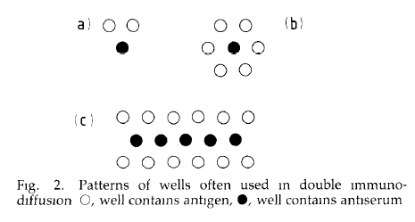

Animal Handling and Surgery
The sections below concern many aspects of cell and tissue culture.
Injection of Cells into Portal Vein
Most notes here taken from Waynforth & Flecknell, Experimental and Surgical Technique in the Rat, 2nd Ed., (London: Academic Press), 1992.
Pre-Operative
Drug combinations producing anesthesia can vary with the rat strain. Wistar rats can obtain excellent anesthesia with fentanyl/fluanisone with midazolam, but DA rats are unresponsive and increasing dose can be fatal (DA rats should get volatile anesthetics).
Inhalational Anesthesia
If using inhalational anesthetics, anesthesia must is first induced and then maintained. The concentration of induction is anywhere from 2-10 times the maintenance concentration, but varies with the gas used. Enough oxygen must available in a tank. The vaporizer must also have enough inhalational anesthetic. Start the flow of oxygen to make sure it is stable on the gauge. The vaporizer is set to the induction percentage and oxygen flow to 1 liter/min and the line introduced into the induction chamber; the chamber is fitted with an input line from the vaporizer, and an output to a gas scavennger. The gas scavening and vaporizer connections are switched to the face mask when the rat is sleeping. The nose of the rat is fitted to the face mask. The vaporizer is adjusted to the maintenance percentage. When surgery is complete, the rat is placed in the cage on a "Vetbed" (not on sawdust) in an incubator at 37°. After it recovers in 5-10 min, it is returned to its holding room. Note any violent respiratory movemnents of the rat, or shallow respirations: take off the mask or remove it from the chamber, and reduce the percentage to avoid overdosing. Rats that stop breathing can be recovered, laid on back with head extended, and gentle squeezing of the chest between thumb and forefinger done to re-start breathing.
| Anaesthetic | Induction Concentration percent |
Maintenance Concentration percent |
Characteristics |
|---|---|---|---|
| halothane | 3-4 | 1-2 |
|
| enflurane | 3-5 | 0.5-2 |
|
| isoflurane | 3.5-4.5 | 1.5-3 |
|
| methoxyflurane | 4 | 0.4-1 |
|
| ether | 10-20 | 4-5 |
|
Note that recovery takes longer when the anesthesia is also over a long duration. If anesthesia is only 20-30 min, recovery is 5-10 min. But over several hours, recovery can be 15-20 min.
Nitrous oxide is not used to produce anesthesia or loss of consciousness. It provides some analgesia and is sometimes used in combination with other agents. 60%:40% combinations of nitrous oxide:oxygen can be used with reduced concentrations of inhalational anesthetics.
Injectable Anesthesics
Injections are usually done intramuscularly or intraperitoneally with a single dose. I.P. injections generally afford administration of a larger dose, with less painful injection. I.M. injections are into the quadriceps muscle; this may provide more reliable absorption and delivery. Some anesthetics can cause muscle damage however, so an i.p. route may be better.
| Anaesthetic | Dose | Anesthesia Duration | Sleep time* | Comments |
|---|---|---|---|---|
| Acepromazine | 2.5 mg/kg | — | — | moderate sedation |
| Alphaxalone/Alphadolone | 10-15 mg/kg | 5 min | 10 min | surgical anesthesia only if i.v. |
| Atropine | 50 µg/kg | — | — | given to reduce salivation |
| Chloral Hydrate | 400 mg/kg | 60‑120 min | 2-3 h | postanesthestic ileus can occur |
| Chloralose | 55-65 mg/kg | 8-10 h | — | light-moderate prolonged anesthesia not used if animal to be recovered |
| Diazepam | 2.5 mg/kg | — | — | moderate sedation |
| Fentanyl/Medetomidine | 250 µg/kg/300 µg/kg | 45 min | 3‑4 min |
|
Hypnorm(Fentanyl/Fluanisone) |
0.4 ml/kg i.m. | 20 min | 60 min | surgical analgesia, immobilization, poor muscle relaxation |
Hypnorm(Fentanyl/Fluanisone) + Diazepam |
0.3 ml/kg i.m. + 2.5 mg/kg | 45-60 min | 2-4 h | surgical anesthesia |
Hypnorm(Fentanyl/Fluanisone) + Midazolam (1:1:2, Hypnorm:Midazolam:water) |
2.7 ml/kg | 45-60 min | 2-4 h | surgical anesthesia |
| Immobilon SA (Etophorine/Methotrimeprazine) | 0.5 ml/kg i.m. | 60 min | 2-4 h | surgical analgesia |
| Inactin | 80 mg/kg | 1-4 h | 2-3 h | variable duration and depth of anesthesia |
| Innovar Vet (Fentanyl/Droperidol) | 0.4 ml/kg i.m. | 20-30 min | 1-2 h | analgesia/immobilization, poor muscle relaxation |
| Ketamine | 100 mg/kg i.m. | 20-30 min | 2 h |
|
| Ketamine + Acepromazine | 75 mg K/kg + 2.5 mg ACP/kg | 20-30 min | 2 h | light anesthesia |
| Ketamine + Diazepam | 75 mg K/kg + 5 mg DZP/kg | 20-30 min | 2 h | light anesthesia |
| Ketamine + Medetomidine | 75 mg K/kg + 0.5 mg MDM/kg | 20-30 min | 2-4 h | surgical anesthesia |
| Ketamine + Xylazine | 90 mg K/kg + 10 mg Xyl/kg | 20-30 min | 2-4 h |
|
| Methohexitone | 10 mg/kg i.v. | 5 min | 10 min | surgical anesthesia only if i.v. |
| Pentobarbitone | 40 mg/kg (60 mg/kg lethal) | 15-60 min | 2-4 h | narrow safety margin |
| Propofol | 10 mg/kg i.v. | 5 min | 10 min |
|
| Thiopentone | 30 mg/kg i.v. | 10 min | 15 min |
|
| Tiletamine/Zolezepam | 40 mg/kg | 15-25 min | 1-2 h | light-moderate surgical anesthesia |
| Urethane | 1000 mg/kg | 6-8 h | — | prolonged surgical anesthesia, non-recovery only |
| Xylazine | 10 mg/kg | — | — | sedative, some analgesia |
* Note that
sleep timeis the duration of the loss of the righting reflex. | ||||
Intraoperative Care
It is important to maintain three things during the surgery of the rat.
Respiratory System
All anesthetics produce some degree of respiratory depression, affecting the balance between carbon dioxide and oxygen. This requires an oxygen cylinder, regulator/flowmeter, and face mask. Sophisticated monitoring equipment is often not available, so it is important to look for signs of hypoxia. The color of the ears, muzzles and footpads will take on a bluish coloration in albino animals.
Undisturbed rats have a respiratory rate of 70-90 breaths per minute. Under anesthesia, it might fall to 50% of the value.
Cardiovascular System
Failure of the cardiovascular system has many causes: blood loss, hypothermia, and anesthetic overdose. Blood loss is typical. A 200 g rat has about 15 ml of blood, and a rapid loss of 3-4 ml is enough to cause irreversible shock.
Body Temperature
All anesthetics affect thermoregulation, causing body temperature to fall. It is best to do this on a heating blanket or pad. Alternatively, wrap the animal in cotton wool or bubble-pack, then cut a window for the area to be target surgically.
Postoperative Care
The animal will usually require fluid in the 12-24 hour postoperative period. 40-80 ml/kg/24 h injected subcutaneously or intraperitoneally is suitable. A dextrose-saline (4% dextrose, 0.18% saline) or saline (0.9%) can be used. Severe dehydration can be assessed by observation of loss of skin tone or "tenting" when the skin is pinched; if seen, fluids must be given intravenously.
Culture of Metazoan Cells & Tissue
The sections below concern many aspects of cell and tissue culture.
Tissue Culture Supplies and Consumables
There are many manufacturers of tissue culture plastic consumables. The size (diameter, area) of wells and dishes are generally standardized however. The following table shows the diameters and areas of multi-well plates:
| Product | Well Diameter (mm) |
Well Area (cm2) |
Maximal Well Volume* (cm3 = ml) |
|---|---|---|---|
| 6-well plate | 17 | 9.6 | 15.5 |
| 12-well plate | 10 | 3.8 | 6.0 |
| 24-well plate | 8 | 2.0 | 3.5 |
| 48-well plate | 5 | 0.75 | 1.4 |
| 96-well plate | 3 | 0.32 | 0.37 |
| *Note that the volume assumes that the fill will be the full height of the well, which is 1.6-1.8 cm (16-18 mm), depending on product. This is impractical in most applications. | |||
Propietary
Substrate Surfaces
Manufacturers often feature a product line of TC plastic with a substratum that
is modified
or enhanced,
and the nature of the modified surface is
propietary,
meaning that it might be a trade secret. Alternatively, its
molecular structure is revealed, but the manufacturing process is a trade
secret. Usually because of a patent, no other manufacturer may produce TC
plastic with such features anyway.
Cultured cell types will not grow on every kind of surface however. Read the product catalog to identify which cell types have been shown to grow well—probably without the addition of serum!—and consider whether your cell type might not also grow or maintain on such a surface. Ask for a free sample of the plastic before buying a whole case, telling customer support what sort of cell type you have. They may want to collaborate in some way.
Tissue Culture Practices: Conserving Resources and Keeping Material Costs Low
Dr. Vulliet says that materials/supplies costs on grants do not even amount to more than 15-20% of a grant application. He will tell you that labor costs 80% of a grant, and so cost-effectiveness in grant management would be for the head of laboratory to make sure his postdocs, graduate students, and techs are thinking and working efficiently in laboratory experimentation, rather than fretting about consumables. Dr. Vulliet makes the vitally important point: if an extra pipet for a single use meant possibly reducing the risk of a contamination that might ruin, say, 8 or more man-hours of work, then one has spent 20¢ on an extra pipet to save perhaps $100 in salary time and overall material use. Moreover, one is that much closer to the thing that brings in grants: publishable experimental results.
Of course, with especially critical work, and when much time and effort has been spent in an experiment, most of us do not get stressed about a possibly wasteful use of materials.
But it is possible to get into certain good habits that do not impose a higher risk of significant loss of time and effort due to contamination, while helping both the environment and the laboratory budget because of reduced use of materials.
Changing Media in Flasks
Some people use a disposable pipet to remove the old media from flasks, then they have to use a second pipet to transfer in the new media. However, experience shows that one only need pour out the old media into a waste container rather than use a pipet to remove it. There is apparently a needless fear that media collects around the lip of the container opening and can serve as place for biological contamination.
Pipetting from cleaner to dirtier
There are other ways to minimize the use of sterile disposable pipets. Before opening the wrapper on the pipet, think about how it can be employed in multiple ways before being tossed in the waste.
Suppose you have to prepare some solutions and cell suspensions, and that you will be pipetting balanced salts solutions (HBSS), complete (serum-containing) medium, and solutions containing cell suspensions. It is possible to make use of a single pipet (say a 10 ml pipet) by first pipetting all your salts solutions first without the pipet making contact with anything but the salts solutions, then pipetting media without the same pipet contacting anything but the media, and then pipetting cells in suspension so as to distribute them to containers or prepare dilutions, all by using a single pipet. In fact, when making dilutions, always pipet in the solution in which the cells will be diluted first, then transfer the cells. If you were to transfer the cells first to an empty container, you would have to use a second pipet to add the diluent, and you would not be economizing.
See the next section for complete examples in which the number and type of pipets are counted and use in a best and worst case of materials use.
Complete Examples of Minimizing Materials Use
Preparing Complete Medium
Preparation of medium is quite a common practice. For the bone marrow cells, concentrated stocks of supplements, namely serum, glutamine, and antibiotics are routinely added to commercially prepared essential medium. In a maximal materials use scenario, a pipet selected for the appropriate volumetric capacity would be used for each concentrated stock. For glutamine and antibiotics, pipetted at 5 or 6 ml, that would be either a 5 or 10 ml pipet. For serum, usually aliquotted to 50 ml with the entire aliquot in the container used, that would be a 25 ml pipet (perhaps a less commonly used 50 ml pipet). This would be three pipets.
It is possible to use only a single 10 ml pipet however. This is certainly no problem if the entire contents of the concentrated stock for each solution are to be used up and the containers discarded, since there is no anxiety about cross-contamination.
But if only a part of the whole aliquot/volume of the concentrated stock
is to be used, and this is shared by others, or there is some concern
for cross-contamination, it is possible to use a single pipet but select
which stock is pipetted first. This follows the from cleaner
to dirtier
rule. For example, are you more worried about antibiotics
in your glutamine stock than glutamine in your antibiotics stock? This
would be the case if, in the future, you wanted to make antibiotics-free
medium supplemented with glutamine and serum. Then if you are to use
a single 10 ml pipet, pipet first from the glutamine stock,
then from the antibiotics stock.
And suppose you wanted to make serum-free medium in the future (a likely possibility), and all the media you would ever make always contains glutamine and antibiotics supplements. In this case, you can use a single pipet first to pipet glutamine, then the antibiotics, and then the serum. Note that with a 10 ml pipet, which has about a 13 ml marked capacity, you would have to pipet about 4 times to get 50 ml, but that is not so onerous or time-consuming, and the benefit is conserved resources and reduced costs.
Hence in a maximal use scenario, three pipets are used to transfer the required volumes of three concentrated stocks to the media bottle. In a minimal use scenario, a single 10 ml pipet can be conveniently used without adverse affects on cell cultures.
Media Change
In this situation flasks containing adherent cells are emptied of the old medium when it is time to do so, and given fresh medium.
Some people are wary of the risk of contamination involved with pouring out medium and getting the lip of the opening wet with medium, which might allow growth of contaminating organisms. Hence they use a pipet to remove the old medium, then a fresh pipet to add fresh medium.
However in most if not all cases, it is possible to eliminate all pipets used to remove old media, and to pour them out from their containers directly. Save the pipet.
One might ask that, if it is not a problem to pour out old medium, why not save even the one more pipet (using no pipets) and pour in fresh medium?
There are several reasons why one should not do this:
- Flask necks (openings) are quite narrow, and it is difficult to pour fluids into narrower openings, especially from containers with wider necks (openings), which are typically of stock media containers.
- Pouring gives less control of the stream entering the flask or container of cells. The stream should not be poured directly on to the surface to which the cells are adhering, for the cells getting the force of the stream can detach. Hence use of a pipet allows one to control the force of the flow and to direct the stream toward a surface or part of the container least likely to result in cell detachment.
- Dishes and wells have no volumetric markings to indicate the volume of medium being received. The markings on flasks are also not accurate at the typical small volumes transferred for cultured cells. Hence use of the pipet gives much more precise control of the volume pipetted. This also goes a long way in the conservation of another material resource, namely the medium.
Therefore in a maximal use case of changing medium, two pipets are used. In a minimal use case, only one is used.
Subculturing
From Flasks to Wells in Plates with Cell Counting
Subculturing Cells: General Techniques
The method details involved in the passaging
or subculturing
of cells will vary from one cell type to another. Each cell that
adheres to a culture substrate varies in its ability to be unbound
or forcibly removed from its substratum. The particular method for
your cell type will depend much upon gaining experience with how the cells
behave in culture.
Detachment of Cultured Cells by Trypsin/EDTA
Cultured rat bone marrow cells are rather typical in their ability to be detached as cells adhering to uncoated tissue culture plastic. The cells make use of trypsin/EDTA solutions that are generally ready-made commercially. The time required for detachment depends somewhat on the passage number as well as how confluent or overgrown the cells may be. Early passage cells tend to form bipolar-shaped cells that orient themselves in axes that are described as "swirling," where as later passage cells tend to look more stellate, broad and flat. Early passage cells detach more quickly, while later passage cells are more resistant (require a longer time).
- If your purpose in detaching cells is to freeze (cryopreserve) them, then cells should be healthy. This means that they have not been sitting in media that should have been changed days ago. Cells weakened by improper feeding are more likely to revitalize (thaw from cryopreservation) in lower numbers than those cells more fit because of proper care.
- The commercially available trypsin/EDTA usually comes as a 10 × stock (2.5% trypsin and 5 mM EDTA). This is diluted with a balanced salts solution to the desired concentration, typically 1 ×. Aliquot large 10 × stocks to containers that prevent repeated thawing and freezing. Trypsin is an enzyme/protein, and repeated freezing and thawing reduces its proteolytic activity. Trypsin is also auto-proteolytic, meaning that it is a protease that will digest itself. It is not a good idea to leave it in a 37° water bath for several hours, for it may be much reduced in activity.
- Pour out the media in the flasks containing your cultured cells to be detached. (Note, you need not use a pipet to remove media; just pour out the old media into a waste beaker, taking care not to let anything splash back into the flask. See good tissue culture practices for more information.)
- Rinse your flask of cells with HBSS. Add sufficient volume to cover a couple of millimeters in depth, and swirl the rinse well. Pour out the salt solution into the waste. The purpose of rinsing the cells in the salt solution is to remove traces of serum present in the medium. Serum contains anti-trypsin inhibitors, and this can slow or inhibit the action of the trypsin-EDTA solution.
- Add a minimal amount of trypsin-EDTA solution. This is usually enough just to cover the cells. Some people use half the volume of what covers the cells, and then spreads the solution all around so that all cells make contact with the solution.
- Inspect the flask under the microscope. Perhaps it is possible to see cells already detaching. There are cell-substratum and cell-cell attachments to break. I think the trypsin tends break the cell-cell connections, while the EDTA ties up the Mg2+ and Ca2+ salts that make cell-substratum attachment more likely.
- Put the flask in the 37° incubator for a few minutes. The optimal temperature for trypsin activity is 37°, and so it will work faster. From time to time, remove the flask from the incubator. Inspect the progress of detachment. Swirl the flask back and forth. If >95% of the cells have lifted from the surface, it is okay to continue with the next step. Although it is common to see experienced cell culturists banging the flask with the heel of their hands to jar cells loose, the use of this method to dislodge cells is not recommended: such a technique will break cell-substratum contacts, but does not break cell-cell contact, and so cells will come off in sheets rather than as single cell suspensions.
- It is useful to add in a small volume (at least 1/3 to 2/3 of the volume of trypsin-EDTA) of serum-containing medium to the flask: the anti-trypsin in the serum can be used to neutralize the trypsin. This is optional although recommended.
- Use the pipet to draw in a small amount of medium now containing cell
suspension, and forcefully blow out along all the floor surface on which
the cells adhered. This may be done several times to cover the floor.
This washes loose any further cells.
The next steps are only for detaching cells for the purpose of subculturing:
- It is possible to remove cells in the trypsin-EDTA solution and
inoculate them directly into new flasks for subculturing if:
- a minimal amount of trypsin-EDTA was used such that the volume of medium to which the cells would be transferred would exceed by more than 15- to 20-fold the volume of trypsin-EDTA used
- the cells were not sensitive to either trypsin or EDTA or their growth inhibited in culture
- If the trypsin-EDTA is to be removed (always a safe practice), choose the correct spin tube and transfer the cell solution in the flask to the tube. Spin for 5 min at 50-100 × g (or the appropriate settings for the cell type).
- If the cells were centrifuged from the trypsin-EDTA step, remove the supernatant. If the cell pack is firm and will not come loose, then just pour off the supernatant. If there is doubt that the cell pellet is loose or can pour off, use a pipet to remove the supernatant.
- Add media to the spin tube (if you decided to spin out the trypsin-EDTA solution), and resuspend the cells. Inoculate new flask at the desired cell density.
Freezing and Thawing Cells
Freezing and re-vitalizing (thawing) cells can be a tricky business. The conditions by which to freeze them sometimes need to be optimized especially for sensitive cell lines. Some things are universally understood. A cryopreservative agent (DMSO, glycerol) is used to lower the freezing point; this prevents damaging crystal formation. Moreover the rate at which temperature decrease occurs is slowed so that crystals do not form inside the cell and puncture the membrane.
Freezing
- The cells to be frozen should be in the most fit condition. If the cells are proliferating (have active cell cycles), the ideal cells are in logarithmic growth phase, in medium that is 1 or 2 days old at the most.
- Prepare your cryopreservation medium (thaw it or make it). The kind of medium varies, but typical components are serum (fetal bovine), growth medium, and a cryopreservative (DMSO). For bone marrow cells a cryopreservation medium of 60% growth medium, 35% FBS, and 5% DMSO is used.
- Detach the cells from the flask as usual (trypsin/EDTA). Spin them down. Resuspend in 10 or more cell pellet volumes of HBSS. Take an aliquot and determine the total cell count. It is really necessary to count the number of cells you intend to freeze, so that the person who thaws them (it may not be you) knows how many cells he might get.
- Prepare your cryovials on a rack. Loosen but do not remove the cap for easy opening, filling and closing.
- Spin down the cells again and remove the HBSS rinse.
- Add the volume of cryopreservation medium you intend to use (it's the product of the volume you want per vial and the number of vials you have). It's a good idea to adjust the number of vials and volume of your cryomedium so that you have at least 1 million cells per milliliter. More than 5 million cells per milliliter is probably too dense, but then you may have a luxury of cells too. Resuspend the cells very well! You should not see clumps or aggregates of cells. If you do, let them settle out and make sure you do not pipet them into the vials.
- Distribute the cell suspension to the cryovials.
- Place the vials with a special container designed to freeze cells.
Nalgene (?) makes a product called
Mr. Freeze
which is filled with isopropanol and is designed to slowly freeze cells. - Archive the cells with a reasonable effort at organization. Long-term storage of cells is best in a liquid nitrogen container, but a −70° freezer can store cells as long as 6 months.
Revitalization (Thawing)
- Have your growth medium warmed at 37° before taking cells out of the freezer.
- Have all the things you will use to re-vitalize the cells ready to go, in the hood or at hand. Disposable pipets, flasks, spin tubes (if used).
- Prepare the hood as usual: place sash at the position you will want it, then start blower motor, wait at least 15-20 min for sterile containment to develop. You might also want to mist (spray upward) the chamber with 70% ethanol. Your work area should be uncluttered, especially with the tools of others.
- Retrieve the cells from the freezer, and immediately place them in a 37° water bath. Rapid thawing is absolutely preferable to slow thawing.
- Do either (a) or (b):
- Lazy revitalization. This technique works but depends
on how hardy your cells are (most are). The rapidly thawed cell
suspension is just added to the medium in your flask, and the
cells are allowed to detach overnight. You can then replace
the medium the next day to remove components present in the
freezing medium (particularly DMSO). Note this technique is
similar to the
lazy
serial passaging method of confluent cells, in which a bare minimum of trypsin and/or EDTA is used to detach cells, and then the cells (or a fraction of them) are recovered after diluting with medium and without removing (by centrifugation) the trypsin/EDTA. - Scrupulous freezing medium removal. Transfer the cell suspension in the freezing vial a spin tube containing at least 5 or more volumes of isotonic washing medium (HBSS). Mix well. At this point, if you wanted to count the cells, take the necessary aliquot for counting. Spin as usual (50-100 × g for 3-5 min) to pellet cells. Remove supernatant. Resuspend in growth medium and distribute/transfer to flask(s).
- Lazy revitalization. This technique works but depends
on how hardy your cells are (most are). The rapidly thawed cell
suspension is just added to the medium in your flask, and the
cells are allowed to detach overnight. You can then replace
the medium the next day to remove components present in the
freezing medium (particularly DMSO). Note this technique is
similar to the
- Incubate cells in proper conditions (usu. 37° with humidified 5% CO2 atmosphere) for at least 12 hours (overnight).
- The next morning, inspect the flask (container) for attached cells, and whether the plate might be super-confluent.
Isolation and Culture of Cells in Bone Marrow Tissue of the Rat
The following steps are a combination of experiences of many and reports in the literature for primary culture of rat bone marrow cells with continuous passaging.
Preparing the Rat
More than one rat can be prepared at a time. The experienced individual will attempt at most a half dozen rats, if the bone marrow of each rat is to be handled separately; more rats, if all the cells can be pooled and cultured.
Obtain the rats from the housing facility. There are no real restrictions on the size of the rat. Rats obtained in the 150-175 g weight range will double their weight in a few weeks easily. The quality and yield of stem cell could be age/weight-related. The equipment used, such as the needle gauges for flushing marrow, will certainly depend on the size of the rat used.
Heparin
Before the rat is sacrificed, it is thought that the flushing of the marrow is assisted by administration of the anticoagulant heparin.
Weigh the rat, and inject intraperitoneally (i.p.) 2-3 units heparin per gram body weight.
Wait about one hour before the sacrifice.
Sacrifice by Halothane Poisoning
The animal handling protocol specifies and demands that the animal be
killed using halothane poisoning (lethal anesthesia
).
Obtain a large dessicator with ceramic inner support. Cover the support with a paper towel; the animal will rest upon it.
Place the dessicator in a fume hood. Any dessicator or container to be used for this poisoning procedure is NOT to be placed outside an operational fume hood. Halothane is quite volatile, and will kill technicians, if mishandled, as effectively as it kills rats.
With the dessicator and bottle of halothane inside the fume hood, open the bottle of halothane within the fume hood, and pour out 5 ml or so (often a capful) into the lower chamber of the dessicator (where the dessicant usually goes). It can be poured on to a towel or cotton wool, although it is not necessary. Close the dessicator lid immediately, if the rat is not placed in immediately. This also allows the halothane to distribute in the dessicator.
The technician should wear gloves (not latex, but nitrile) when handling the halothane. Halothane is a fluorocarbon that can pass through skin (?), and this should be kept in mind when giving the greatest respect to this substance.
It will take about 10-15 minutes for the animal to be ready. It generally moves around for a while, then goes limp, but continues to breathe for a while. It seems that the breathing becomes quite rapid until it stops.
One can take the animal while it is breathing, but it is important to cut the animal open quickly and cut a major artery such that it bleeds profusely. Otherwise the animal can recover. However, leaving the animal in a bit longer after it has stopped breathing will assure the technician more time in cutting the animal open and bleeding it.
Dissection
Obtain sharp-pointed scissors that have been cleaned with water in mild detergent, and given a wipe with 70% ethanol (referred to just as ethanol hereafter). A large and small size pair of these scissors is useful.
Removing the Hind Limbs
Lay out a disposable covering (such as plastic-backed absorbent paper) for working with the animal and catching any blood. The animal is laid on its back, and the abdomen soaked in ethanol prior to the first cut. On the inner side of the hind leg, begin cutting into the skin/fur at the most posterior point and proceed to cut the skin anteriorly to the anterior of the hind leg, then cutting dorsally. The intention is to remove as much skin covering the hind leg, and expose the muscles of the hind leg. Short cuts can be done to pull back skin and fur from the hind leg. Cut the skin also toward the ankle of the leg.
With skin pulled back as much as possible, begin cutting muscle located at the head of the femur, muscle which proceeds toward the knee. This makes the femur more movable at wider angles, and allows the hind leg to be bent backwards to break the capsule that forms the hip joint and expose the ball joint of the femur head.
The technician should be careful not to lose time in butchering the hind leg: feel for the femur with the gloved hand, and cut only the muscle alongside it near its head, enough to allow its greater angular movement and exposure of the hip joint. The pearl-white appearance of the ball joint liberated from the acetabular capsule will be apparent. Cut free the hind leg from the body. Repeat the same process for the other hind leg.
Freeing Bone from Muscle
The red marrow of the long bones is used. This means recovering the femur and tibia. The muscle and ligaments surrounding and attaching to these bones is not so much cut away, but pulled away. Generally the tibia is the cleanest, with few if any insertions of tendons. The femur requires some trimming.
Enough skin must have been cut in the anterior of the ankle to expose the bones and ligaments of the ankle. Grasp the ankle/foot, and pull the foot backwards. A cracking noise should be heard, and the ankle pulled with sufficient force backwards (dorsally) and then up (anteriorally) such that the tibial articulation is exposed. Observe carefully that a tendon or ligament does not cause any resistance to the pulling action. Cut it first before proceeding. Pull the ankle with attached ligaments anterior to expose more of the tibia. When enough tibia is exposed to grasp it, firmly hold the bone and pull downward and at an angle. This will cause the tibia to separate completely from the muscle. The tibia should be entirely free of muscle. The wire-thin fibula may be attached as well, if it was not broken in the handling; it can be removed (broken off).
To liberate the femur, feel for the long capsule forming the patellar joint. Use scissor to cut into it, and crack it open. Do not cut through all the way. The opening in the patellar region provides an opening to force the patellar end of the femur through. Attempt for the femur through the opening, cracking the patellar capsule if necessary. Pull back and upward the mass of muscle and capsule until enough of the femur is exposed to grasp it. Grasp the femur and continue pulling more muscle away from it.
Examine the bones for any excess muscle and fat, and trim these away as much as possible. The smaller-sized scissors may be useful for this.
Place the bones in something like a weighing boat. Liberally apply ethanol to all areas and surfaces of the bone. Do not let the bones sit in a pool of ethanol. Pour off the excess. Take the ethanol-bathed bones dry to the sterile hood and let them dry within the hood. Do not let them dry outside the hood.
Under the Sterile Hood
These steps should have been completed just after the rat was kept waiting after injection of heparin.
- Place a polymer kitchen cutting board in the hood. It should be washed with mild detergent (Alkonox, etc.), rinsed liberally, then sprayed with ethanol, and allowed to dry in the hood under the UV light.
- Obtain a very fine tooth saw (or whatever will be used to cut through the bone). It should be washed (if not already clean) and sprayed with ethanol and kept in the hood.
- Have available a selection of needles: 22-, 18-, 16-, and 14-gauge, washed and sterilized or packaged sterile.
- Have available a 3-, 5- or 10-ml sterile syringe. 5-ml is comfortable.
- Sterile 15-ml polystyrene tubes (at least half a dozen) should be available.
- Sterile Ficoll-Paque or suitable lymphocyte enrichment/purification medium should be available (3-4 ml per animal prepared).
- Hanks' Balanced Salt Solution (about 30-50 ml per animal) should be available
- A sterile 75 cm2 tissue culture plastic flask.
- About 25-30 ml growth medium will be necessary. Rat stem cells appear to like α-Modified Essential Medium with 2 mM glutamine, 100 units pencillin/ml, 100 µg streptomycin/ml, and 20% fetal bovine serum.
Sawing the Bones
The bones having been allowed to dry after the brief ethanol soaking should be examined for any need to trim excess muscle or fat.
Grasp the ethanol-cleaned fine-tooth saw and grab the first long bone.
The head of the bone will be cut first. If it is the femur, begin
cutting at the trochanteric angle where it meets the diaphysis of the
bone. If it is the tibia, start about 1 mm below the condyles.
Cut at a right angle to long axis of the bone. Do not saw back
and forth; the sawing action works better if the saw is pulled towards
the technician. Concentrate on starting the initial cut, then the sawing
proceeds more easily. There is usually no need to press down while sawing.
Saw clean through. Sometimes the bone separates in a greenstick
manner, but saw through the separation.
Repeat the same for the other end. For the femur, just above the condyles will do. For the tibia, the red marrow appears to extend down only to a halfway point along the diaphysis, and it is wise to saw at a point 1-2 mm above an obvious change in the body of the tibia.
Cut only one bone at a time and proceed to the next (flushing) step. Do not cut all bones at once, then go to flushing.
Flushing the Marrow
The bones can be grasped with a hemostat that has been sprung slightly such that it hooks the first catch without applying excessive pressure. Usually hemostats apply too much pressure to the cut bones when one tries to hook the first catch, which is why that springing the hemostats even to the second catch with a rod approximating the bone diameter is a useful idea. Save the ideally sprung hemostat in a special place, and designate for the marrow recovery method.
Fit a syringe (5 or 10 ml probably is ideal, but 3 ml will work too) with a 20 or 22 gauge needle, and draw in fully Hanks' Balanced Salt Solution (HBSS). (If that's too slow, fit first with an 18 gauge needle and draw in, then switch to the smaller needle.)
Grab the bone held by hemostats in the weak hand and hold it over the mouth of a 15 ml sterile centrifuge tube (keep the lid handy and clean). One end of the shaft will point down into the mouth of the tube, and the other end will have a needle inserted into it. It is probably better to insert the needle into the larger end, with the red-colored cancellous bone evident.
While inserting the needle, twist in a clockwise-counterclockwise back-and-forth action and push in a little bit at a time. Push on the plunger a little bit to fill the penetrating hole with fluid, but not so much as there is a backflush that drips from the insertion point. Continue penetrating and filling with fluid until the needle is well into the bone. When pushing on the plunger, do not apply the pressure slowly, but in quick rapid pulses designed to apply maximum pressure in less than a second before releasing the pressure. Continue penetrating until the needle emerges on the other end.
Bring the needle back, not all the way, but about to the middle again,
and try digging
or penetrating at another angle, as if to
scrape the inside of the shaft with the needle. Do this at several
angles. Combine it with forceful ejections of a small amount of
solution to flush out the marrow.
During this combined scraping and flushing action, it is possible to observe the very red marrow perhaps emerging out of the end of the cut, and perhaps hanging on to it. Continue working the needle around it until the tissue comes out completely free.
Remove the needle. Check the amount of solution in the syringe, and fill if more than half was used. Now insert the needle into the other end, and try scraping as well the other end. To be more effective, it is useful to change to a larger needle, though small enough to be able to insert into the bone. The length of all needles used however must be greater than the length of the bone.
Inspect the bone for thoroughness of flushing. It is unlikely that all red marrow will be recovered, but if greater than 80% is obtained, that is often sufficient. It is often possible to look down and through the long bone's shaft after a successful flushing.
Breaking Up the Tissue
Single cell suspensions are important in liberating stem cells from clusters of cells that may hide them, and prevent them from adhering to the floor of tissue culture plastic.
Start by drawing in and out with a 5 ml pipet the tissue to try to break it into clumps.
Then take a syringe fitted with a larger needle (14 or 16 guage), and draw it in and out in the same way. Proceed to successively smaller (higher gauge) needles to create a more uniform dispersion.
Density Medium Centrifugation
Spin the tube at no more than 100 × g (not greater 900 rpm in the model in Room 2101), as low as 50 × g. The time of the spin will depend on distance between the top of the volume and the bottom of the tube. With tubes that are more full, about 5 or more minutes is okay.
While it is spinning, set up in new 15 ml tubes (one for each set of bones from a single animal processed) about 3 ml of a mononuclear density separation medium, such as Ficoll-Paque, Histo-Paque 177, or other suitable cushion.
With the spin completed, either draw off from the supernatant enough volume so that 3-4 ml of solution remains, or draw it all off, and add 3-4 ml HBSS. In that 3-4 ml volume, resuspend the cell pellet. Wait 15-30 seconds for bone spicules and heavy material that does not resuspend to settle. Draw up as much volume as possible, without drawing up the settled material. With the volume in the pipet, wait to see if something settles out into the tip: push that part in the tip out.
With the blow-out switch on the pipettor set for S
(slowest), insert the
pipet into the 15 ml tube, which has been angled to 30-45° off the vertical.
The pipet tip should come to rest against the lower of the inside of the 15 ml,
just above the level of the Ficoll, and the body/shaft of the pipet is support
on the 15 ml tube mouth edge, touching the tube on the opposite of its diameter.
This gives steady support for the pipet inside the centrifuge tube. Slowly
squeeze the blow-out control of the pipettor such that the cell suspension is
layered gently over the top of the Ficoll without undue mixing or disturbance of
the more dense cushion. The flow rate could be as slow as 0.5 to 1 ml/min, at
least initially. Raise the pipet tip so that it is always above the level of
the suspension as it is dispensed.
Carefully move the layered tube to the centrifuge, and spin at 400 × g for 30-40 minutes (this is about 1900 rpm for the centrifuge in 2101).
When complete, the layers appear almost as when they were loaded. The pink-colored phase on top is the Hanks' solution which should largely be composed of platelets. The bottom white phase will be rather opaque, and is supposed to be rich in granulocytic cells. The dark-red pellet at the bottom are hemoglobin-rich cells (erythryocytes at some stage of maturity or development). At the interface between the white- and pink-colored phases is the band where the mononuclear cells will migrate: this usually yellow-colored band includes lymphocytes, monocytes, and stem cells.
Recovery of the cells at the interface involves plunging—somewhat
deliberately but without mixing—a 5 ml pipet with the tip on, or better,
just slightly below the interface. With the suck-in control of the pipettor set
to S
(for slow), draw in the cells at the interface with a slow circular
movement of the pipet tip to sweep the area. It is possible that a good portion
of the pink upper phase and the white lower phase will also be collected. This
is to be more liberal rather than conservative in recovering cells, worrying
less about the presence of contaminating cell types and more about recovering
all possible stem cells. It is possible that as much as half (3 ml) of the
total volume is recovered in drawing out the mononuclear cells.
The collected material is put into a fresh 15 ml tube. Add 2 volumes of Hanks to this material, and mix well. Spin 50-100 × g for 4-5 min. Remove the supernatant.
Final Handling
If the cells are to be counted at all, it is a better idea to resuspend in HBSS, because it is calcium- and magnesium-free, although cells do not really clump at all in medium (serum in medium makes any trypan blue use more dark however).
If the cells are to be set up for primary culture, they can be re-suspended in about 5 ml of culture medium. (Rat cells appear to like α-MEM with 2 mM Gln, P/S, and 20% FBS.) The entire yield from a tibiofemoral set of a single animal (from 5-20 million cells) can be plated to a 75 cm2 flask. A 2-3 mm depth of culture medium requires 15-25 ml.
Cells in primary culture should be left at least 24 hours for cells to adhere. In fact, 72 hours may be ideal for allowing cells to establish themselves (see Haynesworth et al., Bone 13: 81, 1992). The medium is changed about every 3-4 days (twice a week) to maintain logarithmic growth and healthy cells. At about 12-16 days, the colonies of cells have multiplied sufficiently to make it confluent, and the flask is ready for its first trypsin-EDTA-mediated detachment. Follow the seed lot storage protocol to maintain lots of cells properly.
Variations in Isolation>
There are many variations/modifications to the method described above:
- Canine nail clippers are used to cut off the ends of the bones rather than a fine-tooth saw
- It is possible to omit the Ficoll (density separation medium) step. However there are more contaminating cell types to deal with, and the sheer numbers of cells packed into a culture flask could inhibit or otherwise affect the ability of stem cells to establish themselves.
Passaging Cultures
Cells can be detached from coated or uncoated tissue culture plastic by a combination of treatment with trypsin and ethylenediamine tetraacetate (EDTA). Cells probably adhere to plastic or matrix coats with a combination of proteins and magnesium and calcium salts; the protease trypsin disrupts the proteins, while EDTA chelates the divalent ions. Trypsin and EDTA are dissolved in an isotonic unbuffered medium (balanced salts solution, possibly with a phenol red pH indicator), with EDTA usually at 0.5 millimolar, and trypsin at 0.25-0.5% (w/v). The level of trypsin and EDTA—particularly the level of trypsin—can vary according to cell type and how adherent a cell is or to the extent of confluence.
Detachment (trypsinization) of cells can be done in two ways. One method does not bother to wash cells free of trypsin (it also uses less resources such as a wash tube), and the other does wash cells. The does-not-wash method would be suitable for cell types whose survival is not overly sensitive to the presence of trypsin, and especially where the passage involves splitting one flask into three or more, where the trypsin can be diluted to sure harmlessness. If not sure, then the does-wash technique is always safe.
Detachment with Trypsin Without Washing
- Obtain sufficient Hanks' balanced salts solution (HBSS) for rinsing out serum-containing medium from the flasks for the number of containers to be treated. Sterile trypsin-EDTA is usually aliquoted into 17 × 100 mm (polypropylene) tubes to contain 10-12 ml and stored in the freezer. Place tubes to thaw. If tubes are placed to thaw in pre-warming (37°) water bath, place them in the bath only for the time needed to thaw them, since trypsin auto-proteolyzes, and the extent of auto-proteolysis is temperature- (and time-)dependent.
- In the sterile hood, pour out (or pipet off) culture/growth medium into a waste container.
- Pipet in sufficient volume for a 1-2 mm depth of serum-free balanced salts solution. For example, for a 75 cm2 flask, this would be 7.5-15 ml volume (= 75 cm2 × [0.1 to 0.2] cm = 7.5 to 15 cm3). Rotate in a circular motion the flask a few times to ensure a good washing.
- Repeat the wash step with balanced salt solution (about half of the first wash volume can be used). The second washing is because a bare minimum of trypsin-EDTA solution is used, and it is even more important to wash out serum-based medium. Rock/rotate the flask in a circular motion a few times.
- Pipet in a volume of trypsin-EDTA just sufficient to coat (and no more) the portion of the flask upon which the cells grow. Put the cap on the flask tight (to maintain sterility).
- Look at the flask under the microscope. It may be possible to observe clusters of cells breaking free from the plastic floor, and cells from each other.
- Most cell types require an incubation time of 4-5 min. Place the flask in the incubator (the temperature optimum of trypsin is 37°). After the period, remove the flask from the incubator and look at it under the microscope to see if most (>90-95%) of the cells have detached.
- If cells have not detached to expectation, rock the flask in a circular motion to swirl to coat the flask again. Place back in the incubator for another 3-5 min. If most cells have not detached still, try another minimal volume of trypsin-EDTA, and repeat the incubation. It is advised not to shock the flask with the heel of the hand to dislodge cells: cells will come off in sheets from the flask without detaching from each other to form single cell suspensions, and it will not be understood correctly what conditions of trypsin-EDTA produce single cell suspensions.
- When the detachment to single cells (or small clusters) is sufficient, add a volume of serum-containing medium that is about one-tenth (in ml) of the area of the flask (2-3 ml for a 25 cm2 flask, 6-7 ml for a 75 cm2 flask, 12-15 ml for a 150 cm2 flask). The serum in the medium contains anti-trypsin agents to stop the action of trypsin. Draw in a pipetful of cell suspension, and blow it (with medium force) across the floor where the cells were growing. This dislodges any more cells and washes the floor of cells. Repeat this a few times until the floor has been well covered.
- The detached cells are ready for use as is. If plating to fresh flasks without counting the cells, it is only necessary to divide the volume in the used flask so that each flask gets an equal amount. If part of the detached cells are to be distributed to wells of plates or to dishes, or to be used in other experiments, it is probably useful to obtain a count on a hemocytometer first, then divide the cells as needed.
When manipulating multiple containers, it is possible to perform each step on all containers, rather than all steps only on one container before proceeding to the next container.
Detachment with Trypsin With Washing
If the trypsin-EDTA is to be washed from the cells after detachment (more typically done), the following modifications to the does-not-wash method can be done.
- It is less critical that the bare minimum volume—one just enough to coat the cell layer—of trypsin-EDTA in Step #5 be used. Using a volume that covers a 0.5 mm depth (for a 75 cm2, that would be 75 cm2 × 0.05 cm = 3.75 cm3, or 4 ml or so) is probably good enough. Rock or swirl the solution in the flask as for the does-not-wash method.
- At Step #10, transfer the cells to sterile conical centrifuge tube of the appropriate size (15 or 50 ml tube). Spin the cells gently (50-100 g for about 5 min) to pellet them, and remove the supernatant. Resuspend cells in growth medium, or in the appropriate solution for use of cells for experimentation. It is probably useful to count cells as well.
Viable Cell Number
By Trypan Blue
For ethidium bromide/acridine orange viability, see next section.
A typical method is that described by M. K. Patterson (1979) Meth.
Enzymol. 58, 191-152. 1 vol of suspension of cells of about
300,000-500,000 per ml in serum-free maintenance medium is mixed with 1 vol of
0.4%-2.0% trypan blue dye in PBS, and cells excluding dye are counted. The
total volume must be sufficient to fill a hemocytometer platform with a grid for
counting. This is usually 10 µl. The hemocytometer platform must be
neither overfilled (fluid bulging
beyond the platform border) nor
underfilled (fluid not covering all the platform).
Allow at least a couple of minutes for the dead cells to take up the dye. The microscope is ideally set with a 10× phase objective with a green filter (the human eye is most sensitive and visual acuity is likely to be greatest to the middle of the visible spectrum, that being green light).
The entire grid on a hemocytometer has 9 major zones, arranged in a 3 × 3 grid, marked by triple lines. Within the major zones at the four corners, single line grids form 16 minor zones arranged in a 4 × 4 grid. Within the major zones that are centered between the corner zones and the very center of the grid itself, the lines forming the minor zones are double lines.
Each of the 9 major zones is a 0.1 cm × 0.1 cm square. When the coverslip is placed over the hemocytometer, its surface is supposed to be 0.01 cm from the floor of the surface with the grid. Therefore, the cells within the major zone occur in a volume that is 10−4 cm3, or 10−4 ml. Therefore, if one counted the cells in just a single major zone, multiplied by any dilution factor, then multiplied by 10,000, one would have the number of cells per milliliter.
It is not usual to count only one zone, but rather to sample several fields (zones) for a count, average them, and then use the average for the calculation. The standard method is to count all of the four corner zones, and some count the zone at the very center of the grid, for a total of five zones. During counting, many cells will fall across (straddle) a line, either the line bordering a major or minor zone. The usual rule is to count the cell if it falls on the line/border that is at the top and left of the zone, and to disregard the cell if it falls on the right or bottom of the zone. Develop a total cell count for each major zone counted, sum each of the totals of the zones, divide by the number of major zones counted to get the average, then multiply by the dilution factor and 104 to get the cells per ml.
For the viable cell count, count the cells that do not take up the blue dye. To report the percent viability, divide the mean value of cells not taking up dye by the mean of all cells counted (both those that are blue and those that are phase bright).
Ethidium Bromide/Acridine Orange
Wear gloves whenever handling potential mutagens such as DNA-binding or -intercalating dyes!
100× Stock
- dissolve 50 mg ethidium bromide and 15 mg acridine orange in 1 ml 95% ethanol
- bring to 50 ml with 49 ml water
- aliquot to 1 ml and freeze
To visualize cells:
- adjust a suspension of cells to about 1 million cells/ml in PBS or other isotonic medium
- Add an equal volume (10-25 µl) of cells to the dye solution and mix gently
- Place an aliquot on hemocytometer
- First visualize with visible light at 100-400 × and reduce diaphragm to visualize but keep grid visible
- Switch to fluorescence (use the fluorscein filter set), but keep visible light on. Cells that are green are living, and cells that are orange are dead.
Quantitation of Cell Count By Crystal Violet Staining
This method from Lennon et al. (Exp. Cell Res. 219: 211-222, 1995) used to estimate cell proliferation; report shows a linear relationship between rat MSC number and amount of recoverable stain measured in a spectrophotometer (colorimeter). This group reports that this is a modification of method of Westergren-Thorsson et al. (J. Cell Physiol. 147: 523-530, 1991).
- Cultures are rinsed 2 × with Tyrode's solution
- Fix with 1% (v/v) glutaraldehyde in Tyrode's for 15 min
- Rinse 2 × with double distilled water, then air dry
- Stain the fixed cultures with 0.1% (w/v) crystal violet in water for 30 min
- Rinse 3 × with distilled water
- To each 35 mm dish, add 2 ml of 1% (v/v) Triton X-100 in water
- Place dishes overnight on rotary shaker set at 50-60 rpm
- Read OD600 using 1% Triton X-100 as a blank.
Note that this method does not describe a colony-forming assay, although it makes use of a stain typically used for such an assay.
Colony Counting: The Colony-Forming Unit-Fibroblast (CFU-F) Assay
Note: this method is tentative and likely to be modified as more experience is acquired in using this technique, with modifications intended as optimizations.
To determine, as an example, the number of stem (fibroblast-like) cells in a tissue sample, such as bone marrow from a long bone (femur, tibia, etc.), the following steps for the CFU-F assay can be taken, explained in the sections that follow.
Preparation of Cells
Prepare the cells as they would be prepared for doing a primary culture in a flask. It is highly recommended that cells be enriched in the type of adherent cell desired, since contaminating cells, whether adherent or not, might complicate the formation of colonies or the development by staining. The preparation of bone marrow mesenchymal stem cells, in particular, should involve a cell type separation via density centrifugation on a Ficoll-Paque cushion.
CFU-F assays are possible only if the suspension is of single cells, and not cells clumped together. Strategies for producing single cell suspensions include mechanical means in which the cell suspension is passed serially through needles of successively higher gauges, such as from 18 gauge to 20 gauge. It is important also to use a Ca2+- and Mg2+-free medium in producing the single cell suspensions.
Counting Cells
Count the cells using a correctly gated automated analyzer (e.g., Coulter) or manually by hemocytometer.
To continue the example of the bone marrow stem cells, suppose 1.5 million mononuclear cells have been determined.
Planning and Preparing Dilutions
If it is understood that all cells are not capable of forming colonies but the proportion that are is unknown, it will be necessary to perform logarithmic dilutions. The number of dilutions is log(cell count) − 1, where the log(cell count) is rounded to the nearest integer.
In contrast, if the proportion of cells capable of forming colonies is known either from previous experience or published research, a particular starting and ending dilution can be used to obviate the need to test a broad set of titers. Many publications re-iterate that 1 in 105 mononuclear cells from bone marrow are stem cells. That would suggest that in 1.5 million cells, 15 cells are stem cells. Since each stem cell is capable of originating a colony, then 15 colonies would probably be counted. Providing that cells are well-dispersed (single cells) and well-mixed, it may be possible to plate all cells into a single container, such as a 75 cm2 flask or 100 mm culture dish.
Instead of just plating all cells at a single targeted dilution in one container, it is probably better to have at least two different dilutions (it may include the 1/1 dilution, or no dilution) and replicates within dilutions. Use of replicates (duplicates, triplicates) might indicate how well the cell suspenion is dispersed as well as pipetting technique. Instead of large containers for the replicates, consider smaller flasks (25 cm2) or dishes/multi-well plates.
As for the factor of the dilution, logarithmic (factor of 10) dilutions are adequate, and even the wise choice if there is a need to cover a range of several dilutions. In a follow-up experiment, once the proportion of colony-forming units to total cells is known, a smaller factor starting from the intial dilution will probably give a more precise count, if the follow-up is only to confirm numbers from the previous study.
Determine first the number of dilutions in the series that will be done, and the number of replicates per dilution. In the example, it is decided to look at cell suspension that is undiluted, at 1/10, and at 1/100. It is also decided that duplicates will be plated at each dilution, in 25 cm2 flasks. One 25 cm2 flask holding a culture medium with a 3 mm depth can only receive 7.5 ml medium maximally (25 cm2 × 0.3 cm = 7.5 cm3). 90% of the total cells will be distributed to the total of the replicate flasks of a single dilution. If the 1.5 million cells are suspended as single cells, spin them down if they are not already in the plating medium. Re-suspend the cell pellet in plating medium to a final volume whose value is divisible by 5 or 10 to make calculations easier. Dilute cells out with plating medium to the starting dilution (not necessary if the starting dilution includes undiluted suspension). For successive dilutions by a factor of 10 from the starting dilution, add 90% of the volume of the starting dilution volume to empty sterile tubes using plating medium. In the example, the 1.5 million cells are resuspended in 10 ml plating medium, and therefore 9 ml of medium is added to two empty tubes representing the 1/10 and 1/100 dilutions.
1.0 ml is now taken out of the original cell suspension (a 5 ml pipet will do this more accurately than a 10 or 25 ml pipet certainly) and placed into the 1/10 dilution tube. A 10 ml pipet can then be used to draw in and out about a dozen times the diluted cell suspension, with the suspension being relatively well mixed. The process of using the right pipets and measuring out the same volumes is repeated: 1.0 ml is drawn out of the 1/10 tube then and placed into the 1/100 tube, and then mixed. For the example, that ends the dilutions.
Plating the Cells
Appropriately label the containers with the standard identifying marks (date, initials, cell type, perhaps abbreviated description of project or study) and what they will receive (dilution, perhaps replicate number).
The volumes in each dilution are then distributed equally among the number of replicates. In the example, since duplicates are used and since there are 9.0 ml in each tube except the last one, which has 10.0 ml but of which only 9.0 ml will be used as for the other tubes, that means that each 25 cm2 flask will get 4.5 ml.
To economize on the use of pipets, use the appropriate pipet on the most dilute tube in the series first, and proceed to the most dense. In the example, take a 5 ml pipet and draw out 4.5 ml from the 1/100 tube, place it in a 25 cm2 flask. Draw out the other 4.5 ml and place it in a second flask. Without changing the pipet, draw out 4.5 ml from the 1/10 dilution tube, and place it in a fresh flask. Repeat the process of pipetting all volumes without the need to change the pipet until done.
Since the culture vessel volume is less than the ideal one determined of 7.5 ml (3 mm depth), add the balance (3.0 ml) to each flask with plating medium.
Culturing and Staining
The purpose of the CFU-F assay is to stain a colony that will be visible to the naked (unmagnified) eye and be quite distinct as a colony (circular, with well-defined borders to the color spot). The eye can see a spot 2-3 mm in diameter comfortably as a recognizable colony. The diameter of a microscope field with the 20 × objective set is 0.9 mm, with the 10 × objective, double that diameter. If one can visualize 50 cells in the field of a 20 × objective when the cells are just confluent (no piling on), and the 20 × field is 0.9 mm, then a spot 2-3 mm in diameter (3-fold the diameter) would have 9 times the number of cells, or about 450-500. What is important to consider the number of cells in an expanding colony necessary to stain a colony recognizable to the naked eye.
If each colony begins with a single cell, then the time required to produce a stainable colony is equal to the following:
| cell cycle time in logarithmic phase |
× | ln (# cells required to produce stainable colony) |
| ln 2 |
If the cell cycle time is 1 day (24 h), then to grow 500 cells takes about 9 days. However, in practice, it takes about 12-14 days to produce colonies sufficiently large for good visualization with a stain. The colonies are usually larger and there is a lag phase in the growth of stem cells in primary culture.
When it is judged that the colonies are sufficiently large for characterization, then:
- Remove the medium from the cells and wash 3 times with phosphate-buffered saline.
- Add 0.5% crystal violet in methanol. Leave at least 5, and about 10 minutes.
- Gently rinse in water to remove the excess. Do it several times in small volumes until no more excess is removed.
- Count the colonies and verify their appearance in a microscope.
- Leave the colonies to dry.
Processing The Data
To determine the number of CFU-F in the original source material—which may be the entire contents of the marrow of one femur or more long bones, count the number of discrete colonies, verifying them as colonies using a magnifier (both compound microscope and disssecting scope with adjustable zoom helps). If they are replicates, determine a mean and measure of variation. Multiply by the appropriate dilution factor.
Suppose in the example, the two wells of the 6-well plate holding undiluted material were overgrown (confluent) with cells, thereby making it possible to see a clear separation between colonies. No count is possible for these replicates. In the next set of duplicates representing a 1:10 dilution, the count is 31 for one duplicate and 22 for the other, although it was rather difficult to count colonies since some had overlapped with each other. In the next set of duplicates representing the 1:100 dilution, 5 colonies were counted in one, and 6 in another, and the colonies seemed to be the most well-delineated.
The 1:100 solution gave a mean ± standard deviation of 5.5 ± 0.7 while the 1:10 dilution gave a value of 26.5 ± 6.36. This is 550 ± 70 and 265 ± 64. The two mean values (or single values, if no replicates were done at each dilution) should be close to each other. They are about 2-fold off, and it is good if the 95% confidence interval of one mean overlaps with the other, in which case the differences between values in not signifcant. A calculation shows they do not overlap, so it might come down to having to favor one set of replicates as more reliable than the other, if a single value is to be reported. This would probably be the 1:100 dilution values, despite their lower counts reducing the power of the data.
Single Cell Cloning By Limiting Dilution
Method explained well in Bennett et al. (1991) J. Cell Sci. 99: 131-139.
- Establish colonies in primary culture. For example, plate 2 million cells in a 25 cm2 flask in serum-supplemented or feeder cell- layered growth medium. Let colonies emerge, but do not allow culture to become confluent.
- Recover cells with standard trypsinization procedure (or what is suitable).
- Resuspend cells in growth medium so that there are 700 cells in a single
aliquot to be delivered to the well of a 96-well plate. If you
want to minimize the number of tubes (from 12 to 1) used in a perhaps
less accurate dilution method, then:
- Place 16 volumes of a well aliquot in a sterile tube
- Distribute 1 well volume to each well of the 8 wells in one column (Column #1) of the 96-well plate; columns of wells are arrayed vertically and labeled with numbers 1-12, while rows of wells are arrayed horizontally and labeled with alphabetic characters A-H usually
- Add 8 well volumes of media to the tube, to produce a 1:2 dilution
- Repeat steps (b) and (c) until you have serial double dilutions in all 12 columns of wells
- Set up 12 tubes in a row
- Place 20 volumes of a well aliquot containing cells in the first tube at the 700 cell/volume cell density
- Place 10 well volumes of media in the remaining 11 tubes
- Transfer from tube 1 to tube 2 exactly 10 well volumes and mix
- Repeat the process of transferring 10 well volumes from tube n to tube n + 1 until the end tube is reached.
- From each tube starting with the first, transfer a well volume to each well of a column (not row) of wells in a 96-well plate. A column is a vertical array of wells labeled with numbers 1-12, while a row is a horizontal array of wells labeled by letters A-H usually.
- The last column should have 0.3 cells/well. Monitor the growth in each well, especially where single cell colonies are established. Harvest with trypsin and continue another round of limiting dilution if you wish.
S Phase Labeling Using 5-Bromo-2´-Deoxyuridine (BrdU)
Cells undergoing active cell cycling can be labeled with 5-bromo-2′-deoxyuridine (BrdU). BrdU can also be injected into living animals and cells in rapid cell cycling will be labeled (see Orlic et al., Nature 410:701, 2001, who used 50 mg/kg i.p. for 4-5 days prior to sacrifice).
Practical Microbiology
This section deals with the fundamental biology of bacteria and viruses used for molecular cloning purposes. This covers their growth, maintenance, and storage.
Sources:
- H. Miller,
Practical Aspects of Preparing Phage and Plasmid DNA: Growth, Maintenance, and Storage of Bacteria and Bacteriophage
(1987) Meth. Enzymol. 152, 145-170.
Bacteria
Most bacteria used in cloning are derivatives of the Eschericia coli K12 strain. These strains have been developed to remove the ability of the host to restrict or modify nucleic acids to make them suitable hosts for propagating DNA. Others lack particular expression systems (lac operon) to permit identification or selection of clones that incorporate required systems dependent upon their expression.
Glassware and media must be sterile.
Culture
Streaking plates. Pure cultures are obtained from single colonies on agar plates.
- Flame-sterilize a nichrome loop, let it cool, then pass it into bacterial culture.
- Streak back and forth along one quadrant of the agar plate. Re-flame the loop and let cool.
- Rotate counterclockwise by a quarter-turn.
- Pass the loop once into the first quadrant, and streak back and forth into the second quadrant. Re-flame loop and cool.
- Rotate to the next quadrant, and perform the same streaking procedure for the next quadrant, making sure the loop passes out of the preceding quadrant one.
Isolated colonies should be re-streaked on new plates to create a master plate. Plates can be stored at 4° for several weeks if wrapped in Parafilm.
Culture in broth/liquid medium can be produce as many as 4 × 109/ml (OD550 ~10). Factors affecting growth include the medium, aeration, the strain, and temperature. Note that more exact concentrations can be determined by diluting cells and plating on solid medium to count colonies. A 82 mm plate can accomodate 50-200 colonies and will give a good estimate. Place a 10 to 500 µl drop of the culture at the center of the plate and spread it rapidly using a sterile bent glass rod (dip in 70% EtOH and flame). If the plate is on a rotating wheel, this greatly aids the process.
Long-term Storage
Either stab or glycerol cultures are acceptable. Stab cultures require maintenance at least at 2 year intervals, while glycerol cultures can be left indefinitely.
Stab Cultures
2- or 3-ml glass vials with tight-fitting caps (preferably rubber gaskets) are used. The vial is filled two-thirds with molten stab agar and then autoclaved (loosen caps during autoclave, and tighten only after the vials have cooled). An isolated colony is picked up with a loop or toothpick and then stabbed several times into the vial. An airtight seal can be made by dipping the top of the sealed vial in hot paraffin. Storage is at room temperature in the dark.
Glycerol Cultures
A 15-50% glycerol culture is suitable for frozen (−70°) storage of bacteria. 0.85 volumes of an LB broth culture can be mixed with 0.15 volumes of sterile (autoclaved) glycerol, distributed to cryovials, then stored in the freezer. Alternatively, a cell paste from an agar plate or pellet can be mixed with a buffer of 10 mM TrisHCl pH 7.4 + 10 mM MgSO4 containing 50% glycerol, and the cells stored in cryovials.
Recovery from frozen culture does not require thawing the tube. Instead the surface can be scraped and directly streaked on agar plate. A better practice is to make a large number of tubes for single thaw, and use those.
Contaminations
Maintaining culture purity is essential. Plates will often show colonies of different character (size, color, odor, etc.) and these are contaminants from the handling process. Pour plates may also show plaques from contaminating bacteriophages. T1 phage is stable in air and can ruin collections. A strong antiseptic for T1 is required.
In selecting or determining auxotrophic characteristics of the bacteria, use a minimal medium (e.g., M9) with and without the supplement. For checking for specific fermentation of a sugar, use MacConkey agar containing the specific sugar.
Recombination-defective mutants and their uses. recA mutants are deficient in recombination and this deficiency can be tested with UV irradiation or use of mitomycin C or methylmethane sulfonate. Streak one half of a plate with the recA strain and the other half with a known rec+ control. Cover half of each streak on the open plate with aluminum foil and expose the open plate to bacteriocidal lamp for several seconds. Replace cover and incubate. The recA strain is more effectively killed. recA mutants are better for stable transfection especially of repeated sequences, which can delete or invert.
Suppressor mutants. Suppressors feature mutant tRNAs that can continue protein synthesis past or beyond nonsense mutations. Many phages employ amber mutations. The bacterial host codes for the suppressor. supF will suppress λ S mutations. The Pam3 mutation is suppressed by supE or supD.
Originally K12 strains contained hsdR and hsdM which restricted and modified unmodified DNA, particularly from eukaryotes. The restriction system is altered to prevent its action, but the modification system allows K12 strains to propagate the DNA. Strains with active restriction systems will greatly reduce the titer of λ phage produced, a factor which can identify them.
Bacteriophages
Biology of λ Phage
Phage λ serves primarily as a vector for large inserts of DNA to be maintained and expressed in E. coli. At least 400 vectors have been described in the literature by year 2000, developed over 25 years. The wildtype phage is a ds DNA composed of 48,502 bp. Two strains were completely sequenced in the early 1980s and partial sequences of strains and vectors are abundant. The phage carries linear DNA with single-stranded termini 12 nt long designeed cos for cohesive termini, and after infection, the molecule circularizes through cos ends; the ends are covalently sealed by DNA ligase and the molecule twisted by DNA gyrase (all host origin).
In lytic growth, ~30 proteins are made for genome replication, particle assembly, then cell lysis, which takes 40-45 min to complete with a yield of 100 phage per infected bacterium.
The virus has a lysogenic state that is exploited in which the DNA is integrated into the host genome. The int gene mediates integration and the lysogenic state is maintained by the cI gene. Other genes rexA and rexB prevent superinfection by other phages.
The genome is organized physically into functionally related clusters. The left-hand region has genes Nu1 through J whose products package viral genome into phage heads and assemble virions from filled heads and pre-formed tails. The central region from J to gam provides gene for gene regulation, establishing/maintaing lysogeny, and doing recombination; since these genes are not essential for lytic growth, they can be removed for insertion of foreign DNA. The right-hand region gam to Rz are necessary for replication and lysis of hosts.
λ infects hosts via the maltoporin homotrimer (421 aa, 18-strand β barrel) by interaction with phage J protein carboxyl-side residues (J protein is 1133 aa long). This receptor normally functions to take in maltose and maltodextrins; expression of host lamB is repressed by glucose and induced by maltose. The outer membrane of bacterium typically has 50,000 receptors. A reversible phage tail-receptor complex forms with magnesium required, then becomes irreversible as components of tail fiber are affected by a membrane-bound mannose phosphotransferase encoded by host ptsM. Viral DNA is injected in linear form, right-hand region first. This requires a higher temperature (> ~28°) to occur efficiently, as does lysis.
Immediate Early Transcription. After the linear DNA circularizes into a superhelical form, transcription from two promoters pL and pR occurs, these being to the left and right of the cI repressor gene. Transcription terminates at tL and tR1, but there is a 40% readthrough at tR1 to tR2. All transcription is by host enzymes: E coli RNA polymerase and the ρ protein at termination sites. Protein N (pN) gets transcribed and is an anti-terminator essential for lytic expression. Protein Cro is also produced, as are proteins O and P, essential for replication.
Delayed Early Transcription. Protein N inhibits the transcriptional termination of the host RNA polymerase at tL1 and at tR1. Two flanking delayed genes are now expressed: cII and cIII. Protein N is quite unstable (half-life 1-2 min) in some mutant bacteria and must be transcribed continuously to produce cII and cIII. As proteins CI and Cro are expressed, they downregulate N transcription/expression (although E coli RNase III upregulates N transcription). pN works by dimerizing and binding to a hairpin structure known as boxB with the nutL and nutR sites (called N-utilization). To work completely some host proteins (antitermination factors) are required as well: NusA, NusB, NusG, and ribosomal protein S10. These complex with pN-boxB and make the polymerase avoid pausing at the termination site.
<---------- tI pI tL2 tL1 nutL pL -------------------------------------------------------------------------------------------- J att int cIII N cI cro cII O P Q R -------------------------------------------------------------------------------------------- pR nutR tR1 tR2 -------------->..............>
Lysogeny or Lysis. The ultimate determinant as to whether lysis occurs depends on the multiplicity of infection (the higher, the more likely lysogeny) and the host's nutritional state (the worse state leads to lysogeny). The level of cAMP may be a determinant since it is affected by nutritional conditions. Because none of the phage promoters is known to be affected by cAMP, a bacterial gene or genes may be involved in the effect of cAMP. Protein CII is especially important since it activates phage genes that repress lytic function and which facilitate integration of viral DNA into host chromosome. CII regulates transcription from promoters pRE, pI and paQ, which are involved in transcribing int and cI genes. The cI gene product, also called the λ repressor, binds three 17-bp operator sites in the early promoters (pR and pL) which block expression of genes N, cro, O, P and Q, all necessary for lytic phase progression. This can be reversed by Cro protein, which competes for the OR operator site bound by CI protein.
CI and Cro dimers bind to these operator sites with different order of binding, affinities, and cooperativity. CI binds more strongly to oR1 and oR2 whereas Cro binds to oR3 strongly, repressing transcription at pRM and CI expression, and oR1 weakly. CI binding at oR3 tends to repress its own expression from pRM. CI binding at oR1 and oR2 represses pR and thus Cro, but it activates its own expression at pRM.
+-----------------------+ pL | pR | <----+ | +----> | | v | | -------------------------------------------------------------------------------------------- oL1 oL2 oL3 cI oR3 oR2 oR1 cro -------------------------------------------------------------------------------------------- ^ ^ | | ^ ^ ^ | | | <---+ | | | | | | pRM | | | +-----+------------------+----------------+-----+-----+
Lysis. Viral DNA replication is mediated by delayed early transcribed genes O and
P, whose stronger expression results from anti-termination by gene N expression.
The phage has an ori site at which replication begins with help of host proteins and
pO and pP. 50 circular genomes are produced and then there is a shift to rolling circle
mode (from θ mode replication) which will produce concatenated linear viral DNA for packaging.
This mode shift is known to be inhibited by a heterotrimeric exonuclease V encoded by bacterial
recB, recC and recD. The phage gam gene product will bind and inactivate the
exonuclease V, thus preventing its action, which appears to be to degrade unknown long DNA
(probably an anti-phage protection); Gam is not necessary if the host is a recBCD mutant
and produces inactive exoV. If λ cannot produce Gam to counter exoV, the phage
can still produce virions by avoiding the more efficient rolling circle and creating multimeric
circular (θ) forms. This requires a recA+ host since this gene product
which has a terminase activity to cleave the cos site and linearize the DNA
for packaging.
Titering Phage DNA
Bacterial cells are grown as a lawn in top agar. A single colony of cells is inoculated in sterile medium (for example 100 ml LB medium with 2 ml of 20% maltose) into a 500 ml flask and grown to OD600 of 1.0. Cells are then pelleted (2500 × g 10 min) and re-suspended in sterile 10 mM MgSO4 (~25 ml) and stored for up to 2 weeks at 4°. There should be 1-2 × 109 cells per ml.
To titer:
- Set up a series of sterile 12 × 75 mm culture tubes to cover log dilution range. Prepare the log dilutions in TMG buffer (10 mM TrisHCl pH 7.4, 10 mM MgSO4, 0.01% gelatin) in microtubes to cover a range predicted to give countable plaques on lawns.
- Transfer 1 µl from the microtubes in the range to the 12 × 75 tubes
- Add 200 µl of plating bacteria to each tube.
- Add 2.5 ml of top agar to each tube: it should be cooled at least to below 48-50° so that bacteria are not killed.
- Immediately pour onto bottom agar on 90 mm culture plates already warmed to room temp (or 37°). Use of gridded plates make for easier counting.
- Let top agar harden for 15 min at room temp.
- Incubate overnight at 37° inverted.
- Be certain to count plaques before they expand/overgrow
- Use control plates (cells without added phage) to ensure quality.
Preparing & Purifying Phage
Phage is prepared in scaling stages. Small scale lysates of modest titer are used as inoculates for large-scale numbers of hosts to produce large-scale lysates of high titer (from billions to tens of billions per milliliter). Phage is then precipitated using polyethylene glycol (PEG), then DNA extracted and purified. This usually requires several hours of work a day for a week. The laboratory requires an ultracentifuge with swinging buckets (Beckman SW41 and SW60), and a refractometer.
- Grow bacterial hosts in the small scale under the proper conditions and to the proper counts per volume and then infect them. Titer the phage. Start a larger production of bacterial hosts and then infect them to produce high titers. Titer the large-scale virus. Store stocks at 4°.
- Add 10 ml of 1 M MgSO4 and 120 g PEG-6000 per liter of stock phage. Leave at least 60 min (and perhaps longer) at 4° to precipitate phage.
- Spin 8000 × g 20 min at 4°
- Remove supernatant, then re-suspend pellet in with 15 ml TM buffer, Transfer to 50 ml capped tube.
- Add 15 ml chloroform. Mix vigorously to extract.
- Separate the phases in a 30 ml glass (Corex) tube at 12,000 × g 10 min.
- Transfer upper aqueous phase to new glass tube, and re-extract with chloroform as in previous step. Recover aqueous phase. Phage can be purified using equilibrium or velocity gradient centrifugation in cesium chloride (CsCl).
- Equilibrium gradient. CsCl is added to aqueous phase to 1.5 g/ml density; done by adding 0.75 g CsCl per milliliter. Confirm by checking refractive index at 1.3815 ± 0.002. Adjust by adding water or salt until index is read.
- Spin at 210,000 × g for 24-36 h at 20° (this speed is 35,000 rpm in SW41 Beckman rotor). Ensure that no chloroform was transferred as it weakens the tubes. Also the tubes must be full! The run produces a self-generating gradient. An opalescent band can be seen in room light. It is likely that two bands might be present, with the lower band (higher density) being DNA-containing phage, and the upper band being an empty coat.
- Velocity gradient. This type of centrifugation saves time, but it demands creation of a partial gradient. Prepare three solutions of CsCl in sufficient volume: 1.45, 1.50, and 1.70 g/ml. Add 1.5 ml of 1.45 g/ml solution, then underlay with 1.50 g/ml, then underlay that with 1.70 g/ml. To each ml of phage in TM solution, add 0.5 g CsCl. Layer over the top of the gradient. Fill the centrifuge to the top of the tube with TM buffer.
- Spin 22,000 rpm for 4 h. Phage is a blue opalescent band at the 1.45-1.50 g/ml interface. Place against dark background to visualize.
- Recover the band by puncturing syringe fitted with 18-gauge needle. Cut top of tube or stab with another needle to permit entry of air during recovery.
- A repeat of the CsCl centrifugation is performed again, at a smaller scale (spin in SW60 at 42,000 rpm for 16 h at 20°). Only one band should appear.
- Store phage in the CsCl/TM solution at 4° in the long-term.
Extraction and Purification of Phage DNA
Produce phage in high titers and concentrate in CsCl (or alternative) and store. To recover DNA:
- To (each) 0.2 ml of CsCl-concentrated phage, add
- 50 µl 0.5 M EDTA pH 8
- 12.5 µl 20 mg/ml pronase in TE
- Place in dialysis tubing and leave 1 h in 10 mM TrisHCl pH 7.4, 1 mM EDTA, 0.5 M NaCl at 37°. External volume should be >1000× volume within dialysis bag. This simultaneously removes CsCl and starts pronase digestion
- Change dialysis buffer and continue for another hour. Remove the dialysate to 1.5 ml microtube.
- Add salt-saturated phenol in equal volume to extract protein and spin 2 min in microfuge.
- Remove aqueous phase to new tube. Add equal volume of chloroform. Mix well, Then spin in microfuge.
- Transfer aqueous phase to new tube and add 2.5 vol cold ethanol and leave 10 min on dry ice (at −70°).
- Spin in cold microfuge for 5 min.
- Decant the supernatant and permit to air dry. Re-suspend in 0.5 ml TE buffer and leave several hours at 4 ° to permit solubilization.
- Determine the DNA concentration in the spectrophotometer. Sample should be stored at −20°.
High Titer λgt10
A permissive host (E. coli C600) is used when desiring to generate high titers of λgt10.
- Grow E. coli C600 shaking at 37° in 10 ml supplemented LB medium to OD600 of 0.1-0.2.
- Inoculate with a single plaque of λgt10 (punched out from stock plate) with pasteur pipet.
- Shake 4-6 h at 37° until lysis apparent (cell debris, partial clearing, foaming of medium).
- Add 2 gtt chloroform and continue shaking 5 min at 37°
- Spin 1500 × g; remove supernatant and store at 4° as phage lysate
- Titer the phage (see method on serial dilution and plating)
- Large scale: Grow 1 liter of C600 in supplemented LB medium to OD600 of 0.2.
- Inoculate with 2 × 109 pfu from stock.
- Shake vigorously about 4-6 h until lysis evident.
- Titer the solution (should be 3-10 billion pfu/ml)
- Phage DNA is extracted and concentrated according to large-scale preparation and purification procedure
Fluorescence Microscopy
Fundamentals
Imaging in Living Cells
Notes from M. Whitaker, Fluorescence Imaging in Living Cells,
in Cell Biology: A Laboratory Handbook, J. E. Celis, ed.,
Vol. 2, (San Diego: Academic Press), 1994, pp. 37-43.
Fluorescent molecules can be used as tags or indicators. For visualizing cells, tags typically bind (usually covalently) to a known target molecule in an cellular compartment or structure of interest, and can be used to track or locate the cell. Indicators take advantage of properties of fluorescent molecules that are sensitive to the presence of a target or condition, such as molecules that bind to and change fluorescent properties in the presence of cations (H+ or pH, Ca2+, Mg2+, K+.
Most fluorophores are impermeant. R. Tsien modified them by making acetoxymethyl (AM) esters of their acids, which improves permeability. When these esters locate intracellularly, esterases in the cell hydroxylyze them, and the formed anion now traps the molecule in the cell, making it impermeant in the reverse direction.
Low-light detecting cameras and confocal microscopes are better at seeing fluorescence than is the nake eye or standard photographic film.
Using AM Esters
Cells vary in their ability to accumulate and hydrolyze AM esters.
- To the cell suspension or monolayer (if cells attached), add the AM ester solution to final 5 μM from a stock of 5 mM in DMSO (therefore, a 1:1000 dilution).
- Wait 15 min at 25° (for mammalian cultures)
- Wash twice with a 10-fold excess volume and incubate an additional 15 min at 37°
- Check the loading efficacy. If it was too much, reduce concentration and time of step 1. If too little, go to next step.
- Increase the AM ester concentration by 5 μM, and add both the ester and Pluronic F-127 with stirring to a vortex before adding this to fresh cells. Incubate 15-30 min, and go to step 2. (PF-127 is made at 20% w/v in DMSO and added to final 0.2% after warming stock at 40° for 20 min.)
- Lyse the dye-treated cells with 0.1% Triton X-100.
- The relevant (excitation or emission) spectrum of the dye is done in a spectrofluorimeter with saturating levels of ligand present (e.g. make sure 1 mM Ca2+ is present when fura-2 is checked).
- Now take spectra on both the ester and the free acid forms of the dye. Ideally the spectra of dye lysed from the cells should look like the free acid form.
- The amplitude of released dye can be compared with amplitude
of a known standard:
Ccell = Fsam × Cstd × Vsam Fstd Vcell
Vsam = volume of dye sample
Vcell = volume of cells sampled
Fsam = fluorescence amplitude of standard
Fstd = fluorescence amplitude of standard
Microinjections
Sometimes dyes must be microinjected. Microinjectors can be made from filament capillary glass tubing (Clarke Electromedical), filling the shank of the pipette using fine plastic tubing and a Hamilton syringe. Fine tubing can be made by drawing out a yellow pipet tip after heating to melting in a flame.- Use aluminum to construct an electrode holder and to hold micropipets at 45°, tip up. Drill the block in an array with 2 mm dia holes with a depth of 10 mm.
- The holder is placed in deep petri dish with lid. Add 10 µl dimethylaminonitromethylsilane, (CH3)2NH-SiH2-CH3NO2 to the bottom of dish.
- Bake in oven 175° for 30 min. Open lid in fume hood, as vapor is toxic.
Silanized micropipets are a better way to prevent loss of protein during injection. An inverted microscope is used. Set up the pipet above the substrate. Now focus on a plane 1 mm or more above the cells: pipets get broken all the time because of hitting the substrate. Gradually lower the tip once if focus to the plane of the cells. For high-pressure injection, use repetitive (0.5 Hz) pressure pulses to keep solution in tip free from contamination from bathing solution. Impale cell and inject a pulse with the 0.5 Hz rhythm. Oil droplets at the tip will protect contents from contamination as pipet approaches cell (for manual injection).
Confocal Light Microscopy
Notes from J. B. Pawley and V. E. Centonze, Practical Laser-Scanning
Confocal Microscopy: Obtaining Optimal Performance from Your Instrument,
in Cell Biology: A Laboratory Handbook, J. E. Celis, ed.,
Vol. 2, (San Diego: Academic Press), 1994, pp. 44-64.
In confocal microscopy, it is important that a point source of light be focused
on a point within the specimen, and that an image of the light emitted from the
point be focused by the objective back to an aperture located in a
photodetector. The setup involves monochromatic light from a laser source
passing through an excitation pinhole then through an exciter filter. What
emerges is blue light.
A dichroic mirror then reflects the light toward
the object which focuses it to a point on the specimen plane. Light from the
specimen is the brought back through the objective, through a scanning system,
passes through the dichroic mirror (emerging as green
light), passes
through a barrier filter and then
Fluorescence Microscopy: Staining Cells with Fluorescent Dyes (CM-FDA, CM-DiI, Hoechst dyes)
Molecular Probes® CellTracker™ Green CM-FDA Dye
5-Chloromethylfluorescein diacetate (CM-FDA) is part of a series of dyes developed by Molecular Probes which can serve as vital probes, that is be retained in cells for several generations (cell cycles). These dyes pass through the membrane and are thought to form an impermeant product covalently bound to glutathione following a glutathione S-transferase-mediated reaction. Glutathione levels in most cells are at 10 mM, and the transferase is essentially ubiquitous. Applications therefore include:
- long-term studies of normal and transformed cells
- investigation of cellular thiol levels
- cell viability
- cytotoxicity
- transplantation
- cell fusion
The CellTracker panel of dyes were developed to cover a broad range of colors to allow labeling and mixing of multiple cell types/populations. CM-FDA and BODIPY (8-chloromethyl-4,4-difluoro-1,3,5,7-tetramethyl-4-bora-3a,4a-diaza-s-indacene) are members of the CellTracker Green set. CMAC (7-amino-4-chloromethylcoumarin), CMF2HC (4-chloromethyl-6,8-difluoro-7-hydroxycoumarin), and CMHC (4-chlormethyl-7-hydroxycoumarin) form the CellTracker Blue set. CMEDA (5-chloromethyleosin diacetate) is the only member of CellTracker Yellow-Green, and CMTMR (5-(and-6)-(((4-chloromethyl)benzoyl)amino)tetramethylrhodamine) is the only member of CellTracker Orange. The diacetate dyes require hydrolysis of the acetate esters to become fluorescent, something usually done by intracellular esterases.
All reagents can be used in cell culture medium to label cells. After labeling, cells only need be placed in fresh medium. CMFDA, the three blue dyes, and the orange dye are reasonably photostable. After 4 cell divisions, cells which had been stained with CMAC, CMHC, CMFDA, or CMTMR were still reasonably bright.
All dyes retain fluorescence with aldehyde fixation chemistries. Cells stained with CMFDA, BODIPY, or CMF2HC can be illuminated with anti-fluorescein, anti-BODIPY FL, and anti-Marina Blue antibodies.
CMFDA and other CellTracker reagents should be handled as follows:
Storage and Preparation
- Reagent vials must be stored dessicated at −20°.
- Stored product should be protected from light.
- Stocks are stable for 6 months when stored as described.
- DO NOT FREEZE AND THAW REPEATEDLY (this does not apply so much to the product divided into 50 µg aliquots).
- CellTracker dyes are dissolved in dimethyl sulfoxide (DMSO) to a final
concentration of 10 mM. For CM-FDA, since its molecular weight of 468.8
is printed on the label, this means adding 107 µl of DMSO to a
50 µg vial containing CM-FDA to produce a 10 mM CM-FDA solution.
50 µg × μmol × L × mmol × 106 µl = 107 µl 468.8 µg 10 mmol 1000 μmol L - Mark the label on the vial
10 mM in DMSO
along with the date and your initials when the DMSO is added.
Labeling of Cells
A working solution is prepared in which the cells will be incubated with the dye. This solution can be serum-free cell culture medium or isotonic (balanced salts) solution, possibly buffered. If you use a buffered solution, make sure the buffer is not an amine- or thiol-based buffer, since these will immediately react with the dye and eliminate its effectiveness.
Using the 10 mM stock, prepare a working solution in the range of 0.5 to 25 μM. A higher concentration (5-25 μM) would be appropriate if the application involved long-term (>3 days) staining or where the cells were rapidly dividing. A lower concentration (0.5 to 5 μM) would be better for shorter experiments, such as viability assays. It is best to use the minimal concentration possible, since overloading can have negative and unpredictable physiological effects.
For bone marrow stem cells to be tracked in animal tissues, the following protocol seems to work well:
- Calculate the volumes of serum-free medium or buffer and of dye stock necessary to prepare a 10 μM CMFDA working solution. The 10 μM concentration was chosen because it's an easy calculation for a 1000-fold dilution. The volume should be at least more than 10 volumes of the cell pellet, but not really less than 10 ml, and certainly not less than 5 ml. This requires 5 µl of the 10 mM stock in DMSO, and the pipettors available in the hood really do not accurately pipet volumes accurately much less than 5 µl. At 5 µl, this represents less than 5% of the 107 µl stock anyway, and would lead to repeated thawing and freezing cycles of the dye stock (not recommended). Therefore, plan at the very minimum to use a 10 ml working volume, requiring 10 µl of dye stock.
- It is not required for adherent cells to be detached for labeling. However, if cells have to be detached anyway for other purposes, detach cells (with trypsin-EDTA) and prepare them in a conical tube. If adherent cells are to be labeled directly, prepare a working volume that will be at least 1 mm deep in the flask. For a 75 cm2 flask, that requires 75 cm2 × 0.1 cm = 7.5 cm3 = 7.5 ml working dye solution.
- Make sure the medium or salts solution in which the working dye solution is prepared has been pre-warmed to 37°.
- Label the cells:
- If you want to economize on the use of supplies, then resuspend the cell pellet (for detached cells) in the volume of serum-free medium or balanced salts solution (buffered or otherwise), and add the dye directly to the solution, and immediately mix the added dye. If you resuspended the cells in 10 ml of medium or salts solution, then add 10 µl CMFDA stock and rapidly mix.
- A safer, perhaps more effective, but less economical way is to prepare the dye solution in a separate 15 ml tube. Measure out the volume of serum-free medium or salts solution, then add 0.001 volume of dye stock and mix. Now pipet this volume into your cell pellet, resuspending the pellet very well.
- Place the cells in dye solution within an environment typical for their growth conditions (i.e., in the incubator). The dye labeling period will be 15-45 minutes long.
- Spin the cells down and remove the dye solution supernatant.
- Re-suspend the cells in pre-warmed fresh medium.
- Leave the cells for another 30 minutes. This ensures modification of the probe. Spin the cells down and resuspend and use.
The periods of first and second incubation apply to detached or adherent cells.
Source: Haugland, R. P., Handbook of Fluorescent Probes and Research Chemicals, 6th Ed., (Molecular Probes: Eugene, OR USA), 1996, pp 328-329.
Molecular Probes® CellTracker™ CM-DiI
CM-DiI is a chloromethylbenzamido derivative of a class of fluorescent compounds known as diakylcarbocyanines. The dialkyl moiety of the molecule is typically an octadecyl (C18) chain that makes the molecule quite lipophilic, and therefore provides its ability to associate strongly with cell membranes, and be used as a probe. The carbocyanine moiety is the part that gives the molecule the property of being fluorescent. There are two classes of carbocyanine structures: DiI refers to the dialkylindocarbocyanine and DiO refers to the dialkyloxacarbocyanine structure. The difference is that the carbon (with two methyl groups attached) in the five-membered ring is substituted with an oxygen (see diagram).
Storage and Preparation
The dry stock is best dissolved in dimethylformamide (DMF), dimethyl sulfoxide (DMSO) or in ethanol at 1-2 mg/ml.
Cell/Tissue Labeling
Before labeling, dilute stock in a suitable medium such as Hanks' balanced salts solution (HBSS) or Dulbecco's phosphate-buffered saline (D-PBS). A suitable working concentration is 1-2 μM, but this can vary, depending upon application. Because the MW for CM-DiI is about 1000, 1 μM is about 1 µg/ml.
- Since your stock is 1-2 mg/ml (or approx. 1-2 mM), you should dilute it 1:1000. Determine the volume in which you will incubate the cells. 5-10 ml is typical.
- Pour out 300-500 ml of refrigerated (4°) water into a beaker, and keep it chilled.
- Pipet 5-10 ml of HBSS into a sterile 15 ml conical tube.
- Pre-warm the HBSS to 37° (in water bath or incubator).
- Add 1/1000th of CM-DiI stock (5-10 µl) to the HBSS.
- Spin the cells to be labeled in a tube that at least has the volume of the dye-containg HBSS.
- Remove the supernatant from the cell pellet. Add the CM-DiI containing HBSS to the cells, and resuspend them very well.
- Incubate the cells in a 37° water bath for 5 minutes.
- Immediately transfer the tube after 5 minutes to the beaker containing chilled (4°) water. Leave 15 min.
- Spin down the cells and remove the supernatant.
- Use the labeled cells for your application.
Photoconversion of Fluorescent Dyes With Diaminobenzidine (DAB)
Fluorescent dyes are unstable and irreversibly photobleach when they fade with visualization. This photobleaching process involves formation of reactive free radical species. This realization suggests that monomeric precursors that form colored insoluble polymers such as diaminobenzidine might be used to preserve the location where fluorescence is observed. Singleton & Casagrande (J. Neurosci. Meth. 64: 47-54, 1996) report a modification of the methods of Maranto (Science 217: 953-955, 1982) and Sandell & Masland (J. Histochem. 36: 555-559) for the photoconversion of DiI in the presence DAB.
Slides should be treated within 1-2 days of sectioning to avoid the possibility of the natural, slow photoconversion of the fluorescent dye.
- Tissue sections containing DiI (or fluorescent dye reactive to the presence of DAB) are rinsed 3-4 times briefly in cold (4°), filtered 0.1 M TrisHCl, pH 8.2 buffer.
- Slides are incubated for 45-60 min at 4° in the dark in a solution of fresh, filtered, and cold 1.5 mg/ml DAB in Tris pH 8.2 that has been 0.45 μm-filtered.
- Slides are rinsed with Tris pH 8.2 buffer and flattened on to a depression slide (can be made using a "Pap-Pen" (EMS, Ft Washington PA) or with nail polish) without a cover slip. Excess buffer is removed on flattened section using filter paper and replaced with 1-3 drops of fresh DAB solution.
- Area of interest then located and irradiate with rhodamine fluorescence filter set.
- Change DAB after 10 min with fresh, filtered, and cold solution, then every 20-30 min thereafter for the photoconversion period. Monitor progress by switching to white light.
The DAB solution should be fresh, filtered, and cold or else the background is too high.
Electrochemiluminescence (ECL)
Meso Scale Discovery (MSD) offers a multiplex detection technology called a SULFO-TAG label which emits light with electrochemical stimulation from electrode surfaces in multiarray and multispot microplates. In a typical well of the multi-array plate, the bottom surface composed of a working electrode surface separated by a dielectric from a counter electrode surface. Capture antibodies coat the working electrode surface to which the antigen is bound. A sandwich antibody to the antigen tagged with the SULFO-TAG label is then added. The plate is electrified and luminescence occurs. The SULFO-TAG label is composed of a ruthenium (II) coordinate complex whose structure is shown in the figure:

ECL has advantages over other detection modalities:
- Mimimal background because the stimulation mechanism of electrical voltage current is decoupled from the signal (light)
- Assays do not require washing of unbound substances at all because only labels bound near the electrode surface are stimulated
- the labels are stable and safe (non-radioactive)
- the ruthenium complex emits at ~620 nm which eliminates color quenching interference
- each label can be repeated excited with enhanced light levels and thus improved sensitivity (signal amplification)
The microplate surfaces can be reactive to direct immobilization of capture antibodies, immuno-dot blot assays (western replacment), and receptor-ligand with cells or membranes fixed to surface. Alternative pre-coated surfaces with avidin/strepavidin, glutathione, or nonspecific antibodies (2ndary type) can be supplied.
The MULTI-ARRAY and MULTI-SPOT microplates allow the preparation of different coatings on the working electrode of a single well for multiplexing of a single sample. The MULTI-ARRAY approach turns the working electrode surfaces into a n × n square grid, while the MULTI-SPOT makes the most of working electrode surface by arranging the coatings into a honeycomb or regular geometric arrangement of spots (higher density arrays).
MSD makes the plate readers that read the different spot geometries and vary by speed of reading, and multiplexing capability. The signal has a 6-log dynamic range. Detection is with CCD cameras with telecentric lenses. Another detector type uses a photodiode array for fast signal reading and analysis with 5-log range.
Immunocytochemistry/Immunohistochemistry
Radioallergosorbent test (RAST)
Radioimmunosorbent test (RIST)
Gel Immunodiffusion With Or Without Electrophoresis
[source: GS Bailey, Immunodiffusion in Gels
(Ch. 33) in Proteins,
Walker JM (ed.), Methods in Molecular Biology Vol 1, Humana Press, 1984.]
As increasing amounts of multivalent Ag react with fixed amount of Ab, precipitation occurs in part because of extensive crosslinking between reactant molecules. When Ab is in excess, added Ag is in present in form of insoluble Ag-Ab aggregate. Adding more Ag creates a precipitate. As more Ag is added, it too becomes in excess and there is a reduction in precipitate. The relative position of lines is a function of antigen molecular size.
Ouchterlony Double Immunodiffusion
This technique used to compare different antigen preparations. When multiple precipitation lines are present, the Ag solution contains multiple antigens with specific antibodies reacting to them.
Materials.
- agarose solid
- 70 mM barbitone (veronal), pH 8.6 + 0.01% thimerosal. Dissolve 14.5 g sodium barbitone, 7.16 g Na2HPO3 • 10 H2O, 6.2 g boric acid, 0.1 g sodium ethyl mercurithiosalicylate in distilled water. QS up to 1.0 L.
- Solutions of antigen and antiserum
- Petri dishes or rectangular plates, plastic or glass
- gel punch and template
- flat level surface
- humidity chamber at constant temperature
- 0.1 M NaCl
- staining solution: add 1 g Coomassie Brilliant Blue R-250 to 90 ml EtOH and dissolve well. Add 20 ml glacial acetic acid. Add 90 ml dist water. Final concentration is 0.5% (w/v) CBB-R250 in 45% EtOH and 10% acetic acid.
- destaining solution: 45% EtOH + 10% acetic acid
- Add 1 g agarose PER 100 ml barbitone buffer and heat to 90° to dissolve. (Final is 1%). Compute the amount of 1% agarose necessary for the plates to be poured to a 1-2 mm depth.
- Pour in petri or rectangular plates to the 1-2 mm depth; make sure surface is level. If there are bubbles, pass a flame quickly over them to remove them.
- Allow 5-10 min for setting. Gels can be stored in container with tight-fitting lid containing wetted towel to maintain humidity at 4° for a week.
- Using a punch suitable for gels, punch out the patterns for Ag and Ab wells (see figure below). The gel plug might be picked out with a needle or the punch is connected to water vacuum aspirator.
- Fill the wells with antigen and antisera solutions until the meniscus disappears. The analysis is probably better started by performing a dilution series of Ag against undiluted antiserum. If the antigen is pure, make it 1 mg/ml. If partially pure, 50 mg/ml. If very impure, 500 mg/ml. 5 µl volumes can be used: for a 1.5 mm height for a 5 µl aliquot, the well must have a diameter of 2.3 mm.
- Leave the gel plate in humidified chamber for 24 h at a constant temperature of 20 °.
- When the precipitin arcs are complete, photograph them directly using dark field illumination or by drawing naked eye observation on suitable oblique illumination of the plate against a dark background or after staining. Before staining, apply a 1 kg weight (liter beaker full of water) to wad of filter paper placed on top of gel for 15 min. Remove soluble protein by washing the gel three times for 15 min each in 0.1 M NaCl with additional pressing. Dry the gel with hair dryer not set on cold, then stain 5 min. Wash with distilled water, then destain for about 10 min.
If glass petri dishes or rectangular plates are used, they should be precoated with 0.5% agarose before the main gel is used, or else the main gel slides off during staining and washing.
Other buffers also work: 50 mM phosphate pH 7.2 + 0.1 M NaCl
The agarose gel can be separated into test tubes and stored 4° for several weeks.
The interpretation of precipitin line patterns is shown below. In the figure, pattern (a) show identity between both antigens: they are immunologically the same. Pattern (b) shows non-identity, an absence of coalescence: the Ags are immunologically distinct. Pattern (c) indciates partial identity, or partial coalenscence of one antigen: more of the antibodies in the antiserum react with one antigen (that diffusing from the left-hand well) than the other antigen. The spur results from the determinants present in one antigen but lacking in the other antigen. Pattern (d) is a partial identity pattern, but a partial coalescence of two antigens. Some of the antibodies in the antiserum react with both antigens, whereas other antibodies one react with one or other of the antigens. Two antigens have at least one determinant in common, but differ in other antigenic determinants

Single Radial Immunodiffusion (SRID)
The materials used are the same for Ouchterlony double immunodiffusion.
- Prepare a 55° water bath.
- For each 100 ml of barbitone buffer, use 2.0 g agarose. Heat the buffer to 90° with constant stirring.
- Place the dissolved agarose solution in the 55° bath. Equilibrate an equal volume of monospecific antiserum in the 55° bath; the dilution of antiserum should be determined from pilot experiments.
- Pour the solution on rectangular plates (glass slides are quite convenient). When the gels are cool and formed, they should be used within 24 h if kept at room temp or can be stored in humidified chamber at 4 ° for longer periods.
- When ready to use, use a template and gel punch with 2 mm diameter to create a row of wells.
- Fill at least three wells with known (standard) Ag solution of different concentration. The other wells are for test unknowns.
- A visible disc of varying radius will appear to indicate a precipitation zone. The assay may take more than a few days. Every 24 h, measure the diameter of the precipitation zone, until it no longer expands. Illuminate the plate against a dark background. To improve resolution, place in 1% tannic acid for 3 min, then view.
- The plate can be stained first by incubating in several changes over 2 d in 0.1 M NaCl. It is pressed to dry it, then stained and destained. Plot the disc diameter against the log of the antigen cocnentration. Determine the [Ag] in the unknowns by interpolation.
Use a base gel coat if washing and staining are done (see above).
If samples in neighborning wells are too concentrated, precipitin discs will overlap. It may be necessary to repeat the assay with additional dilutions.
The antiserum should be monospecific, or a number of discs will be visible. It becomes a problem to identify the disc under study. One way to resolve the issue is to re-run with Ag unknown solution alone and the Ag unknown mixed with Ag standard, and perform it in duplicate. The latter will have a larger diameter, thus identifying the disc in question.
Maximum sensitivity is obtained by diluting antiserum with non-immune serum (serum from non-immunized animal). Moreover well dimensions and sample and standard volumes should be increased. It should be possible to measure proteins of 1 µg/ml concentration.
Countercurrent Immunoelectrophoresis (CIE)
Rocket Immunoelectrophoresis
[source: JM Walker, Rocket Immunoelectrophoresis
(Ch. 35) in Proteins,
Walker JM (ed.), Methods in Molecular Biology Vol 1, Humana Press, 1984.]
Also called electroimmunoassay. This is able to determine the concentration of a protein (antigen). It requires a monospecific antiserum for the protein to be quantitated.
Materials.
- 60 mM barbitone pH 8.4. Prepare from barbitone and sodium barbitone. For electrophoresis tanks, the electrode buffer is diluted 1:1 with distlled water.
- 2% agarose
- Stain: 0.1% Coomassie Brilliant Blue in 50% MeOH + 10% acetic acid. The destain is 10% MeOH + 7% acetic acid.
- 5 × 5 cm glass plates about 1.0-1.5 mm thick.
Method.
- Take 2% agarose (in water) and heat to 100° and place in 52° water bath. Put a 5 ml pipet in the solution during this cooling so that the pipet will be warm
- To a test tube in the water bath put 2.8 ml of the barbitone buffer. Let sit 3 min to warm up. Then transfer with the warm pipet 2.8 ml agarose as quickly as possible.
- The glass plate should be thorougly clean (use methylated spirit). Place it on a level surface, make sure it is dry.
- Add 50 µl of antiserum to the agarose-barbitone mixture on the test tube. Generally the dilution of antiserum should be predetermined or otherwise optimized. Briefly mix the addition to ensure adequate dispersion. Return to water bath to ensure bubbles have settled out.
- Take the tube and put the neck to the center of the plate. Pour slowly from the center. The final gel depth will be about 2 mm.
- Allow the gel to set for 5 min. With a template underneath for holes 1 mm diameter and spaced 0.5 cm apart and 1 cm from one edge of the plate, punch out the gel holes. A suitable hole punch is a Pasteur pipet or metal tubing connected to weak vacuum source (aspirating faucet).
- Put the gel on cooling plate of electrophoresis tank. The electrode wicks are 6 layers of Whatman No. 1, prewetted in electrode buffer. Places them over the edges of the gel. The wells should be nearest the cathode (negative pole).
- Place 2 µl sample in well, diluted in a way so that each well is 2 µl. Loading should be done quickly to minimize diffusion occurring. If possible loading should be done with a running 1-2 mA current which minimizes diffusion.
- For a fast electrophoretic run, a 20 mA (~200 V, 40 V/cm) is passed for about 3 h. Otherwise overnight run at 2-3 mA works. Cooling will be required to dissipate heat (probably placing in 4° room).
- To visualize the rocket-shaped precipitation lines, illuminate the gel obliquely and observe over a dark background. An alternative is to stain the gel. Washing the gel with numerous changes of 0.14 M saline over a period of 2-3 d. After washing, gel can be stained immediately or dried and stained. Drying the washed gel is done by placing it on a clean sheet of glass, wrapping it in wet filter paper, then putting a stream of warm air for 1 h. Wet the paper again with water, remove to reveal the dried gel fixed on the glass plate. Drops of water on the gel can be removed in a stream of warm air.
- The gel can also be blotted dry: when gel is on clean sheet of glass, put 8 sheets of Whatman No. 1 paper on top and apply heavy weight for 1-2 h. Remove wet filter papers: gel should be flat and nearly dry.
- Plot the height of the peaks against concentration.
Note for more accurate determinations, larger plate sizes should be used (e.g., 7.5 × 7.5 cm with 5-10 µl wells).
Glass plates should be as thin as possible to enable cooling. Note that distorted rocket shapes or movement may indicate overheating.
The thickness of the wicks makes them heavy and opens up the possibility of them slipping off the gel during the run. Placing a heavy glass sheet on top of the wicks will prevent this. It would also serve to inhibit gel evaporation. Also the wicks must span the gel width to maintain uniform field strength. Also make sure electrode buffer volumes are large (~800 ml/reservoir) and wicks do not contact electrodes.
Note it is not possible to over-run the electrophoresis: rockets form and lose mobility. It is more important to run the minium time.
The accuracy of this method is as low as 10 µg/ml and requires as little as 20 ng protein to be loaded on the gel.
Basic Immunocyto/histochemical Technique: Illumination (Immunostaining) of 5-Bromo-2´-Deoxyuridine (BrdU)-Labelled DNA
The technique which follows is a generalized method for performance of all immunocytochemical or immunohistochemical staining methods.
Fundamentals
The specimen might be cultured cells or sections of tissue, and the substratum could be a (flint or crown) glass slide or (polystyrene) plastic surface. Tissue sections should have embedding material removed as much as possible while preserving structural relationships: embedding material can block access or exposure of antigen to antibody. Consideration should also be given to the possibility that the materials or conditions used in the embedding procedure could irreversibly alter the recognition of the antigen by the antibody, especially if no illumination is seen. The thickness of tissue sections is of importance only when it is important to cut enough of the tissue that is likely to contain the antigen of interest, given any prior understanding about its location subcellularly or even extracellularly.
The specimen is first fixed to its substratum. Cultured cells usually only need to be washed free of their medium, especially serum-containing medium. An isotonic wash using phosphate-buffered saline (PBS) is typical, although Tyrode's or Krebs/Ringer's/Henseleit solution are also used. Fixation is with 10% formalin or 4% paraformaldehyde for no more than 10 min. Overhardening of the cells can be a problem. Santa Cruz recommends for cultured cells a more gentle fixation procedure using −10° methanol for 5 minutes, then allowing the cells to air dry. Another alternative is to use cold acetone for 2 minutes, then allow to air dry. Santa Cruz recommends any formalin fixation involve 1% formalin in PBS for 10 minutes (with no drying).
For tissue specimens, if frozen sections are used, 4-10 μm sections are placed onto prepared slides at room temperature. (Either pre-treated slides are used, or the slides are washed with 95% ethanol, then subbing solution, then air dried.) Slides can be stored (at −70°) without fixing, or they can be fixed and stored in the refrigerator (one fixation procedure involves cold acetone for 10 min). Sections should be washed in PBS three times before further development.
If working with formalin-fixed, paraffin-embedded tissues, follow the standard method for fixation and embedding. Cut 4-6 μm sections and apply to slides treated as for frozen sections. Removal of embedding medium is through three changes of xylene 5 min each, then rehydration with absolute ethanol twice for 10 min each, then 95% EtOH twice for 10 min each, then in a stirred container of deionized water for 1 min.
Because fixation (hardening) of tissues can affect the exposure and accessibility of the antibody to the antigen, some steps are taken to unmask the antigen. These techniques should be used with formalin-fixed paraffin-embedded tissues.
- Recommended is a heat treatment. The slide is placed in a solution of 0.01% (~25 mM) EDTA buffered either by 10 mM sodium citrate, pH 6.0, or by 50 mM glycine-HCl, pH 3.5 and heated at 95° for 5 min. This is repeated with fresh solution. The slides are allowed to cool 20 min in the solution, then washed with water three times 2 min each.
- Protease treatment. Sections are incubated at room temp in 0.1% pepsin in 0.01 N HCl for 10-20 min. Slides are then washed several times with water.
- Saponin treatment. Sections are incubated 30 min in 0.05% saponin in water at room temp. Washed afterward with PBS.
Endogenous substances which can interfere with the detection or which contribute to a high background can be controlled. Endogenous biotin can raise the background, especially if working with frozen tissue. A step in which avidin at 10 μM is incubated with tissue should block positive interference if an avidin-enzyme conjugate step is used.
Tissues may also contain high levels of endogenous peroxidase. Incubation with 0.1-3% hydrogen peroxide in deionized water followed by washing a few times in PBS should be done in that case. Alternatively a 0.05% sodium azide solution should also irreversibly inhibit the enzyme.
Blocking
Prior to the incubation with the first antibody, the specimen requires
additional blocking. It is typical for components in antiserum to bind
non-specifically to the many substances that make up the specimen. The term
non-specifically
means that substances in the antiserum, typically
antibodies to a variety of antigens other than the one of interest, will bind to
the specimen too. This is more of a consideration with primary antibody that is
a polyclonal antiserum rather than a monoclonal from ascites fluid. However
the primary antibody itself, whether monoclonal or polyclonal, can also
non-specifically bind to parts of the specimen that are not the antigen. When
this happens, the secondary antibody (if detection is not direct) will bind to
all the antibodies that bound nonspecifically. This creates a false positive in
the illuminated specimen or high background.
To avoid this, it is typical to incubate the specimen with the normal serum from a species that is not the same as the origin of the species that produced the primary antibody. Hence if the antibody is a monoclonal (mouse by default), then the normal serum of any animal but a mouse is used. Recommended is a normal serum from the species that produced the secondary antibody. For example, suppose the primary antibody for the antigen is a goat polyclonal. The secondary antibody is a rabbit anti-goat IgG. By blocking the specimen with normal rabbit serum prior to primary antibody incubation, any antibodies from rabbit that bind nonspecifically to the specimen in the blocking step will prevent secondary antibodies from the same species from binding nonspecifically. This reduces but does not eliminate background (noise).
A serum concentration of 10-20% in isotonic solution (PBS) is typical, and Santa Cruz suggests 60 min in 1.5% normal serum.
Primary Antibody
It may be necessary to determine the titer (dilution) of antibody to the antigen for the purposes of immunocyto/histochemistry. Antibodies which can used for multiple applications (western blotting or immunoblotting, immunoprecipitation, flow cytometry, immunofluorescence, immunodiffusion precipitin, nephelometry, ELISA) will vary as the degree of the dilution necessary to perform the step. Follow the manufacturer's guidelines where they are explicit.
The primary antibody is brought to its titer in the blocking solution (1.5% normal serum in PBS). Incubation time is 30 min at room temperature or can be done at 4° overnight. If direct immunofluorescence is to be done, it is a good idea to incubate the antibody a bit longer (perhaps 3-4 times as long) and/or to lower the titer (make it more concentrated by 2-4 times). Direct immunofluorescence is when the primary antibody itself is tagged with a fluorophore (FITC, Texas red, CyX, etc.) and the specimen to be visualized immediately.
The primary antibody solution can be recovered for perhaps repeated incubations of other specimens. The specimen is washed in PBS three times for 5 min each.
Secondary Antibody
This antibody specifically recognizes the IgG molecule, perhaps only its Fc portion. That is, it is an anti-(primary antibody) antibody. This is why it follows after the incubation with the primary antibody.
Another feature of the secondary antibody is that it is conjugated, or more precisely, covalently bound to another agent that will be involved in promoting detection. In the past, this agent was sometimes a radioactive isotope (the primary antibody can be conjugated to an isotope, for a more direct radiological detection). It might be attached to colloidal gold, if the specimen was to be illuminated by electron microscopy. It was found that enzymes such as horseradish peroxidase or calf intestinal alkaline phosphatase could be attached and still retain activity. These days, multiple molecules of the vitamin biotin are attached to the secondary antibody. This does not apprarently affect the affinity of the 2° antibody for its target, the primary antibody.
Biotin binds very strongly to avidin, a protein in egg white. This is one of the strongest binding reactions known between a ligand and its binding protein. When the protein avidin is then bound (covalently) to an enzyme like peroxidase or alkaline phosphatase, this avidin-enzyme complex can be mixed with the (poly)biotinylated secondary antibody, and the secondary antibody should then find itself attached to possibly several avidin-enzyme complexes.
The Illumination (Staining) Step
The specimen has beenblocked, incubated with 1° and biotinylated 2° antibody and then with avidin-enzyme complex. In between there were very thorough washing steps with PBS, so that unbound ligand receptors from the previous step did not interfere with binding of the ligands in the next step.
The enzymes bound to avidin are catalytically active. Substrates/reagents have been developed for these enzymes which can make products that are colored. Alkaline phosphatase can produce p-nitrophenyl phosphate which at alkaline pH makes a yellow colored product. The product is soluble and turns to solution in which the reaction occurs yellow, which can be read spectophotometrically, such as in a microtiter plate reader. This makes this combination of alkaline phosphatase and reagents ideal for ELISA.
More common is the use of peroxidase. It uses hydrogen peroxide along with a metal cofactor to oxidize substrates that are designed to produce a colored substance that is insoluble. Because the colored product is insoluble, it precipitates at the location of the enzyme, and the location of the enzyme is also the location of the secondary antibody to which it is attached (via avidin-biotin binding), which is also the location of the primary antibody to which the secondary antibody is attached, which is also the location of the antigen, to which the primary antibody is attached. As the colored product accumulates it becomes visible. If it were a western blot (immunoblot), it would appear as a colored band visible to the naked eye. If it is a tissue section, it becomes visible when looking at the tissue section in the microscrope at the appropriate objective. The location of the developing colored product therefore reveals the location of the antigen, the entire purpose of immunohistochemistry.
The enzymatic reaction could conceivably continue until one of the following conditions occurs:
- the enzyme loses its activity; after all enzymes can be fragile (although peroxidase is more rugged than most, specifically why it is chosen for these procedures) and become denatured or inactivated by inhibitors which may form
- the enzyme runs out of the component substrates it requires to form the product; this is unlikely since an overwhelming excess of all components are usually given with the hope that a reaction happens
- the technician purposely stops the reaction by washing away the substrates, or by adding an inhibitor or activator
It is the last way in which these enzymatic reactions are stopped. This is because the development of the colored reaction product is intended only to reveal the location and possibly amount of antigen present. Overdevelopment of the colored product obscures or otherwises detracts from the detail of the specimen
BrdU Immunochemistry
BrdU is used to label DNA for the purposes of marking or tracking cells or tissues so labeled. Monoclonal antibodies exist that are highly specific for BrdU-incorporated DNA. Whole animals can be injected (or otherwise dosed) with BrdU and specific cells show an intense stain in the nucleus when indirect immunochemistry is performed. This works with properly fixed and mounted tissue sections, and easily with cultured csdfsdsdfsdfsls. The following method works with cultured cells easily, which are relatively uncomplicated in that there is less background noise or interference with detecting BrdU. Tissue sections may require more treatment to make the DNA of sectioned cells in the tissues more accessible, or treated so as to reduce unwanted high background.
- Washing: It is usual to wash tissues or cells free of media components, including and especially serum, prior to fixation, should those elements be fixed too or are reactive with fixative. However, it is not in every case desirable to wash. If washing, any isotonic solution (PBS, Tyrode's, perhaps Ringer's) can be used.
- Fixation: 4% paraformaldehyde is preferred, but 10% formalin will do. Neutral-buffered reagents are not necessary (there is no data showing that unbuffered fixative is bad). Cultured cells are fixed in 10 min in fresh formalin.
- Briefly wash in distilled water a couple of times. This ensures fixative is not reactive with material in next step.
- Permeablization: 0.25% Triton X-100 works well to ensure that no membrane barriers affect access to the DNA. Others have reported using DMSO or cold acetone. A limited time exposure to the permeabilizing agent is essential, since it can also solubilize even fixed cellular structures; 10 min is sufficient.
- Wash in water a couple of times.
- Endogenous peroxidase inactivation: incubate now in 3% hydrogen peroxide for a good 15 min.
- Wash in water two times.
- If the sample is a tissue, consider treating it with a 0.1% protease solution (1 mg/ml) in PBS for about a few minutes; afterward wash in water
- DNA denaturation: Treat with 2 N HCl (16.5 ml conc HCl in 200 ml water) for at least 30 min. It is necessary to denature DNA to make it immunoreactive
- Wash away acid with water, then incubate for 5 min in PBS
- Block the specimen with 20% horse serum in PBS for 1 hour
- Add primary (1°) antibody at appropriate dilution in the blocking solution. Incubation time varies with affinity of the antibody and temperature of incubation. Cold room incubations at least must go overnight, and for room temperature, a couple of hours is okay.
- Wash with PBS a couple of times over 10 min period each
- Add biotinylated secondary (2°) antibody at appropriate (1:500?) dilution; leave 2-4 hours
- Wash with PBS twice at least over 10 min period each
- Strepavidin-conjuaged horseradish peroxidase (HRP) is now added (1:500?) and incubated for time appropriate (at least 60 min).
- Wash at least 2 times well with PBS over 5-10 min period each
- The substrate (DAB/urea) is usually a two-part reagent combination commercially available, such as from Sigma-Aldrich
- View development as needed: the microscope is the best way to monitor development, but the unaided eye can be effective.
- To stop the reaction, dump off subtrate and add PBS; change a couple of times
- Store in PBS or air-dry.
Working with BU-33 clone from Sigma
Sigma recommends the following procedure in working with its anti-BrdU antibody product.- Deparaffinize and rehydrate sections. Rinse well in water.
- Block endogenous peroxidase with 3% H2O2 for 10 min at 37°. Rinse in water.
- De-nature DNA by incubating with 2 N HCl for 30 min at 37°. Rinse thoroughly with water.
- An enzymatic pre-treatment is also recommended. If pepsin is used, rinse in 0.01 N HCl, the place 0.4% (w/v) pepsin in 0.01 N HCl for 30 min at 37°. If trypsin is used, rinse slide in PBS then incubate in 0.1% (w/v) trypsin in PBS.
Secondary Antibody Kits
Vector Laboratories Vectastain ABC Systems
In this system, the primary antibody is incubated with a biotinylated secondary antibody specific for the species and IgG class. While this is happening, avidin, which has four binding sites for biotin, is mixed with a biotinylated HRP which forms an Avidin-Biotinylated enzyme Complexes (ABC). Actually avidin complexes with several molecules.
The typical Vectastain ABC kit will contain:
- normal serum for blocking (3 ml in a yellow-labeled bottle)
- biotinylated secondardy (anti-IgG) antibody in blue labeled bottle (1 ml)
- Avidin DH (Reagent A) in orange-labeled bottle (2 ml)
- Biotinylated HRP-H in brown-labeled small bottle (2 ml)
Required but not supplied are primary antibody, hydrogen peroxide, buffer (PBS), and a substrate for the peroxidase reaction
- Prepare working normal serum by adding 3 drops of yellow label to 10 ml of PBS in the yellow labeled working bottle
- Add 1 drop of blue-labeled stock to 10 ml PBS in blue label mixing bottle
- Done 30 minutes just before it is used: add exactly 2 drop of Reagent A in orange label to 10 ml PBS in the ABC Reagent mixing bottle. Now add exactly 2 drops reagent B in brown label to mix bottle and mix immediately. Let stand 30 min before use.
- If using tissue sections, use xylene or suitable clearing agent to remove paraffin, and then washed in graded alcohol. Then rinse for 5 min in tap water.
- Deactivate endogenous peroxidases with 0.3% H2O2 for 30 min in methanol or water. If using higher peroxide concentration, use shorter time.
- Wash in buffer 5 min.
- Incubate 20 min in dilute normal serum (the serum in which secondary antibody is always made.
- Incubate 30 min in 1° antibody diluted in buffer. If background staining is a problem, dilute in 1-2% of blocking serum.
- Wash in buffer 5 min.
- Incubate 30 min in 2° antibody.
- Wash in buffer 5 min.
- Incubate with the ABC Reagent for 30 min.
- Wash in buffer 5 min.
- Develop in the peroxidase substrate. Rinse in tap water when development is adequate. Counterstain, clear, then mount.